Germany & Alsace Autumn-Winter Master Dossier · 2 Adults (Tak Hin Lee & Yun Yu Tang)
Germany & Alsace Trip Planner (4–20 Nov 2026) · Berlin → Nightjet → Black Forest & Colmar → Munich
Tailored for two Hong Kong first-timers to Germany: the whole 4–20 Nov 2026 Germany & Alsace trip — Berlin → ÖBB Nightjet → Freiburg/Black Forest → Colmar → Munich — with every confirmed flight/hotel/rail/tour booking integrated, interactive luggage & laundry checklist, verified TGV & Nightjet logistics, Neuschwanstein Castle (Tour #475), Dachau Memorial, Residenz Kaiserhof Christmas Village, Bavarian delicacies, wooden-barrel beer halls, artisan bakeries, Franconian wine, antiques & Leica/vintage cameras.
Outbound Flights & Leg 1–2 Bases · 4–13 Nov 2026
Wed 4 Nov 19:35 HKG → AUH (Etihad EY 871) → Thu 5 Nov 06:20 BER (Condor DE 2553) · Ref: 7AK639. Berlin (5–8 Nov): Karlito Apartmenthaus (Ref: 5126078467) + Fri 6 Nov 18:30 Yorckschlösschen. Sleeper (8 Nov): ÖBB Nightjet NJ 408 to Freiburg (Ref: 0698 9390 6002 7647). Freiburg (9–12 Nov): Schlossbergblick Airbnb (HMKTPHQE4H) · Colmar (12–13 Nov): Logis Hôtel Saint-Martin (6935982825) + Fri 13 Nov 10:00 Domaine François Baur wine tasting.
Inbound Rail to Munich · Friday, 13 November 2026
16:45 Colmar → 17:12 Strasbourg · TGV INOUI 2362 (1st Class, Coach 13, Seats 308 & 307). 34 min transfer at Strasbourg. 17:46 Strasbourg → 21:46 München Hbf · TGV INOUI 9577 (1st Class, Coach 13 Lower Deck, Seats 304 & 305). Booking: NZM3KL.
Munich Base (Confirmed) · Timehouse Serviced Apartments, 13–19 Nov
Timehouse Munich (Schwabing):Leopoldstraße 204a, 80804 Munich (Ref: 6724144172) · U6 Nordfriedhof & U6 Alte Heide, full designer kitchen, laundry room & REWE nearby. Reception 06:30–22:30 — your TGV 9577 pulls in at 21:46, so message Timehouse on WhatsApp as the train approaches for the late check-in / 24/7 Keybox code. This is the only Munich hotel on the trip.
Return Flights · Thu 19 – Fri 20 November 2026
Thursday, 19 November 2026:10:30 AM Etihad EY 126 (MUC → 19:30 AUH) + 21:15 Etihad EY 870 (AUH → 08:30+1 HKG on Fri 20 Nov) · Ref: 7AK639 (boarding window ~09:45–10:00 at MUC).
Direct Lufthansa Express Bus from Schwabing / Nordfriedhof (or Hbf) to MUC in 25 minutes (06:33 or 06:53 departure).
Quick Jump:
CRITICAL ARRIVAL, CHECK-IN & TRANSIT ALERTS:
1) Confirmed Munich Base: Timehouse Serviced Apartments (13–19 Nov) + 22:30 Late Check-In:Timehouse (Leopoldstraße 204a, 80804 Munich, Ref: 6724144172) is your single confirmed Munich hotel — no overlap, no backup to cancel. Reception closes at 22:30 against your 21:46 TGV 9577 arrival on Fri 13 Nov, so message their WhatsApp on arrival (or email wecare@timehouse.de / call +49 89 230 200 00) for the 24/7 Keybox Code in case of train delay.
2) Confirmed Neuschwanstein Castle Tour #475 (Sun 15 Nov at 14:15): Invoice 39901.1056944 (Ticket Center Hohenschwangau). You must be in the castle courtyard at least 15 minutes prior (by 14:00)! Pick up tickets at Hohenschwangau Ticket Center and start walking/shuttling up by 12:45.
3) Mandatory SNCF Luggage Tags: Label all suitcases with name/phone before boarding at Colmar (boarding closes 2 mins before 16:45).
4) Outdated Bus_78.pdf Warning: The Bus_78.pdf file in your trip folder is from 2012 and is outdated. Today RVA Bus 73/78 at Füssen Bahnhof connects dynamically with arriving regional trains.
5) U3/U6 November 2026 Construction Alert: Due to U3/U6 renovation works at Poccistraße/Goetheplatz (southern branch), north-to-center rides from U6 Nordfriedhof / Alte Heide to Odeonsplatz & Marienplatz run normally, but transfer at Sendlinger Tor/Marienplatz if heading south.
VERIFIED OPENING-HOURS & ROUTE AUDIT (RE-CHECKED 1 NOV 2026):
• Camera shops — verified hours:Foto Erhardt (ehem. Foto Dinkel), Landwehrstr. 6, is open Mon–Fri 09:30–18:30 and Sat 10:00–16:00 — so it works as an optional Saturday 14 Nov stop and as the weekday fallback on Monday 16 Nov (15:00) as your S2 returns from Dachau to Hbf. Leica Store & Galerie Maffeistraße (VERIFIED Mon–Sat 10:00–19:00) and merged Calumet / Foto-Video Sauter (Sonnenstraße 21, Mon–Sat 10:00–19:00) anchor the Saturday 14 Nov loop.
• Haxnbauer reopened at Im Tal 38: Haxnbauer's old Sparkassenstraße site closed; Kuffler reopened Haxnbauer at Im Tal 38 (2 mins walk from Marienplatz & Schneider Bräuhaus).
• Bakeries — verified hours:Julius Brantner Brothandwerk (Adalbertstr. 25) is VERIFIED Tue–Fri 08:00–18:30, Sat 08:00–17:00, closed Sun/Mon and bakes daily except Sun/Mon, so the 54-layer hand-touriertes Butter Croissant & Sourdough Baguette are in the counter on Saturday 14 Nov at 09:15 — a direct 8-minute U6 ride from your hotel (`Nordfriedhof` → `Universität`). Café Frischhut keeps its ~14:15 Schmalznudel slot, but has no official website — verify the exact hours on the day. ★ Feinkost Olé has moved off Saturday to Wednesday 18 Nov, 10:00–10:45 (Tue–Fri 10:00–19:00, Sat 10:00–14:00, closed Sun/Mon).
• Dachau Memorial (Mon 16 Nov): English guided tours are VERIFIED daily at 11:00 AND 13:00 (€4/person at the Visitor Center) — take the 11:00 tour and the 15:00 Foto Erhardt slot still holds.
• No morning zig-zag on Saturday 14 Nov: Instead of rushing across town at 08:30 after Friday's 22:30 arrival, Saturday flows in a straight line down the U6 (`Nordfriedhof` → `Universität` → `Marienplatz`), keeping the Saturday Flohmarkt (Olympiapark / Daglfing) as an optional early-bird swap.
• Berlin leg — timed revision (re-checked after the 3 Nov 2026 re-sequence): Thu 5 Nov = arrival → Zeit für Brot → Memorial/Gate/Reichstag 10:15–11:45 → one Mitte lunch 12:15–13:15 (Ständige Vertretung first, daily 11:00–01:00; Sophien 11 second) → Höfe/alley + FOTOIMPEX 13:15–15:15 → Karlito check-in and a ~2h+ rest to ~17:45 → Street Food Thursday at Markthalle Neun 17:00–22:00, dinner ~18:30/19:00 (Anjoy backup — not both). Fri 6 Nov = one bakery → Museum Island on the €24/person one-day pass (not booked; the Pergamonmuseum main building is closed, the only Pergamon display the pass includes is the separately housed Das Panorama exhibition, and that is a separate venue rather than a separate paid ticket) → leave the island 15:45–16:00, Mampe ~16:15–16:40 to ~17:30 (Hofladen closes 18:00) → confirmed 18:30 Yorckschlösschen. Sat 7 Nov = leave 09:00, zoo ~09:30–16:30 with lunch inside and the only planned dinner at BRLO (seasonal vegetable-focused shared plates; at most one optional KaDeWe A / C/O Berlin B add-on shown as labelled optional pins, never both, never on the route line). Sun 8 Nov = checkout 08:00–09:00 → Wall Memorial 09:20–10:15 → Mauerpark 10:30–12:15 → Domke lunch 13:00–13:45 (Mettbrötchen unconfirmed) → East Side Gallery 14:00–15:30 → early dinner/train food ~17:30 → bag pickup at Karlito only if the apartment stored them (Hbf lockers otherwise) → Hbf 20:15 for the 20:52 NJ 408. No Mampe or BRLO on Thursday, no Domke or East Side on Friday, no Prenzlauer Berg afternoon wander on Sunday, and no confirmed luggage storage or museum/BRLO booking anywhere in Berlin. Optional pins stay off every route line, and timings are approximate.
Switch between Munich, Berlin (four timed day routes, each with its optional/backup pins on a separate layer) and Black Forest / Colmar, or filter by Day & Category. Optional and backup places show up in their own day filter but never join a route line.
📋 Master Bookings & Confirmation Wallet (Wed 4 Nov – Fri 20 Nov 2026)
All 11 confirmed flights, apartments, hotels, sleeper/high-speed trains, restaurant reservations & timed tickets in chronological order. Click any confirmation code to copy it to your clipboard.
✅ MUNICH HOTEL — BOOKED & SETTLED (FRI 13 – THU 19 NOV 2026, 6 NIGHTS): Timehouse Serviced Apartments (Leopoldstraße 204a, 80804 München-Schwabing · Booking #6724144172) is your one and only Munich reservation for all 6 nights: full designer kitchen, in-building guest laundry room (Waschküche), and a 6-min walk to the 25-min Lufthansa Express Bus to MUC. Reception closes at 22:30; you requested late check-in and Timehouse instructed you to message their WhatsApp on arrival (24/7 keybox backup).
🗄️ Cancelled bookings (archived stale record — nothing to act on): Bob W Munich City Centre (Schwanthalerstr. 61, 80336 München · #5210364141) was cancelled long ago. It is kept only as a closed record and is not an open option or a decision to make.
Wed 4 – Thu 5 Nov 20262 Passengers Confirmed
1. Outbound Flights: Hong Kong (HKG) → Abu Dhabi (AUH) → Berlin (BER)
• Leg 1 (Wed 4 Nov):Etihad Airways EY 871 · Departs HKG 19:35 → Arrives AUH 00:25 (Thu 5 Nov).
• Transit at AUH: 1 hr 55 mins connection.
• Leg 2 (Thu 5 Nov):Condor DE 2553 · Departs AUH 02:20 → Arrives Berlin Brandenburg (BER) 06:20 AM.
PNR / Booking Ref:
Thu 5 – Sun 8 Nov 2026 (3 Nights)Berlin-Mitte Base
2. Berlin Accommodation: Karlito Apartmenthaus
• Address:Linienstraße 60, 10119 Berlin-Mitte (U2 Rosa-Luxemburg-Platz).
• Unit: Family Apartment with Balcony.
• Check-in: Thu 5 Nov (14:00 – 23:00; an early bag drop ~07:45–08:00 is intended after the 06:20 BER arrival but is not confirmed — Berlin Hbf lockers are the backup).
• Check-out: Sun 8 Nov (08:00 – 10:00).
Booking Number:
Fri 6 Nov 2026 · 18:30Table Confirmed (2 Pax)
3. Berlin Dinner Reservation: Yorckschlösschen
• Address:Yorckstraße 15, 10965 Berlin-Kreuzberg (S1/S2/S25/S26/U7 Yorckstraße).
• Details: Confirmed dinner table for 2 people at 18:30 on Friday, 6 November 2026 — the only confirmed Berlin restaurant reservation in the plan.
• Route Fit: A 15–20 min walk (or a short S/U-Bahn hop) after the non-negotiable #48 Mampe Berlin Hofladen visit on Fri 6 Nov, where you arrive ~16:15–16:40 (30–40 min from Museum Island) and stay up to ~17:30 — the shop closes at 18:00, so keep that buffer. Friday no longer includes a Domke stop.
Reservation Time:
Sun 8 Nov → Mon 9 Nov 2026Overnight Sleeper (2 Pax)
• Hosts: Mario & Nadine · Entire home for 2 adults.
• Location:Mathildenstraße 14, 79106 Freiburg im Breisgau (Stühlinger) — 6 mins walk from Freiburg Hbf!
• Check-in: Mon 9 Nov (After 15:00; early luggage drop confirmed at 06:35 AM right off the Nightjet!).
• Check-out: Thu 12 Nov (By 12:00 PM).
Airbnb Confirmation Code:
Thu 12 – Fri 13 Nov 2026 (1 Night)Colmar Old Town Base
6. Colmar Hotel: Logis Hôtel Saint-Martin
• Address:38, Grand'Rue, 68000 Colmar, France (Heart of Old Town & Petite Venise).
• Room: Superior Double or Twin Room.
• Check-in: Thu 12 Nov (15:00 – 00:00).
• Check-out: Fri 13 Nov (01:00 – 11:00; leave bags at reception during your 10:00 AM Turckheim wine tour).
Booking Number:
Fri 13 Nov 2026 · 10:00 AMShifted from Nov 12 → Nov 13
7. Alsace Wine Tour: Biodynamic Tasting at Domaine François Baur
• Address:3 Grand'Rue, 68230 Turckheim, France (100m inside medieval Porte de Munster).
• Details: Rebooked/shifted from Nov 12 to Friday, 13 Nov 2026 at 10:00 AM for 2 adults (€24.00 via Winalist).
• Timing: 10:00–11:30 AM tasting → optional 11:40 Cave de Turckheim → lunch in Colmar → 16:45 TGV.
• Address:Leopoldstraße 204a, 80804 München (U6 Nordfriedhof / Alte Heide).
• Check-in:15:00 – 22:30. Late Check-In Protocol: You requested late check-in and Timehouse asked you to message their WhatsApp on arrival (plus 24/7 Keybox backup) — essential after your 21:46 TGV arrival.
• Why it works: Full designer kitchen, in-building basement laundry room (Waschküche), and 6 mins walk to the 25-min Lufthansa Express Bus to MUC! This is your only Munich booking—no alternatives outstanding.
Booking Number:
Sun 15 Nov 2026 · 14:15 TourCourtyard 15 Mins Prior (14:00!)
10. Neuschwanstein Castle Tour #475 (Ticket Center Hohenschwangau)
• Tour Time & Number:14:15 · Tour Number 475 (Sunday, 15 November 2026).
• Mandatory Rule: You must be in the castle courtyard 15 minutes prior (by 14:00 sharp).
• Pacing: Arrive Hohenschwangau ~10:15 via Bayern-Ticket (€44 for 2), stroll Alpsee & lunch, then begin walking up (~40 mins) or taking the shuttle bus/carriage by 12:45–13:00.
Invoice / Tour #475:
Thu 19 – Fri 20 Nov 20262 Passengers Confirmed
11. Return Flights: Munich (MUC) → Abu Dhabi (AUH) → Hong Kong (HKG)
• Leg 1 (Thu 19 Nov):Etihad Airways EY 126 · Departs Munich (MUC) at 10:30 → Arrives Abu Dhabi (AUH) at 19:30.
• Transit at AUH: 1 hr 45 mins connection.
• Leg 2 (Thu 19 – Fri 20 Nov):Etihad Airways EY 870 · Departs AUH at 21:15 → Arrives HKG at 08:30 AM on Friday, 20 Nov 2026.
Designed for 16 days away from Hong Kong (4–20 Nov 2026, 0°C–8°C outdoors vs 22°C heated trains/beer halls) using a 5-to-6-day thermal capsule wardrobe washed 2–3 times along the route. Your checkmarks save automatically in your browser (localStorage) on your phone or laptop!
Packing Progress: 0 / 0 Items Packed (0%)Auto-saved to this device
Tip: Filter by category below, or use "Hide Checked Items" on packing night to see only what's left.
🛂 1. Passports, Printed Tickets, Pens & Cash
Critical Carry-On
HK SAR / BNO Passports (valid >6 months) + 2 physical copiesRequired for hotel check-ins, cross-border TGV checks (Colmar/Strasbourg → Munich), Bayern-Ticket ID checks, and VAT tax-free forms.
Printed A4 PDF of ÖBB Nightjet NJ 408 Ticket (Code: 0698 9390 6002 7647)Sun 8 Nov (20:52 Berlin Hbf Tiefgeschoß → 06:17 Freiburg Hbf). Sleeper attendants collect/verify paper tickets at boarding for breakfast & wake-up service.
Printed SNCF TGV e-Tickets (Ref: NZM3KL) + Neuschwanstein Tour #475 Invoice (39901.1056944)Fri 13 Nov TGV 2362/9577 (Coach 13) + Sun 15 Nov 14:15 Neuschwanstein voucher (collect physical tickets at Hohenschwangau Ticket Center).
2 Non-Erasable Blue/Black Ballpoint Pens (Kugelschreiber) in DaypackMANDATORY for writing both passenger names (Tak Hin Lee & Yun Yu Tang) in ink on your paper Bayern-Ticket on Sun 15 Nov to avoid a €60 fine!
€250–€350 Cash in Small Notes (€5, €10, €20) + Coin Pouch for €0.50 / €1 / €2 CoinsEssential for Fleischerei Domke, Café Frischhut, Mauerpark Flohmarkt, Residenz Christmas Village Pfand (€5 mug deposit), Sanifair toilets (€1), and coin laundromats.
Physical Visa / Mastercard with 4-Digit PIN + Apple Pay + Travel Insurance PDFGerman ticket machines (DB/MVV) often require a physical chip-and-PIN card rather than contactless phone tap.
Pre-Installed Apps: DB Navigator, MVGO (Munich), BVG Fahrinfo (Berlin), SNCF Connect & WhatsAppWhatsApp is needed on Fri 13 Nov evening to message Timehouse Munich (Booking #6724144172) upon arrival at 21:46.
🧥 2. 5-to-6-Day Thermal Capsule & Laundry Kit
Wash 2–3× Strategy
4–5× Merino Wool or Uniqlo Heattech Base-Layer Tops + 2× Thermal Leggings/Tights (Per Person)Mid-November is 0°C–8°C with windchill at Dachau Appellplatz, Neuschwanstein gorge & Berlin Wall Memorial, while beer halls/trains are heated to 22°C. Peelable layers are key!
2–3× Mid-Layers (Fleece Zip-Up / Merino Sweater / Cardigan) + 3× Long-Sleeve ShirtsEasy to take off inside warm wooden-barrel Wirtshäuser (Augustiner, Yorckschlösschen, Feierling) without overheating in a single heavy sweater.
1× Windproof & Waterproof Outer Shell Jacket + 1× Packable Down/Puffer JacketLayering a packable down jacket under a waterproof Gore-Tex/rain shell beats carrying one bulky winter parka through 4 train transfers.
3× Pairs of Trousers/Jeans (Include 1× Wind/Water-Resistant Lined Pants for Alps & Titisee)Jeans stay cold when damp; wear thermal leggings underneath on Sun 15 Nov (Neuschwanstein) and Wed 11 Nov (Lake Titisee).
6× Pairs of Warm Merino Wool Crew Socks + 6× Quick-Dry Underwear (Per Person)6 days of socks/underwear comfortably bridges Berlin (Days 1–4) to your first Freiburg laundromat wash on Mon 9 / Tue 10 Nov!
Touchscreen-Friendly Warm Gloves (Thin Liner Gloves!) + Knit Beanie + Scarf/Neck GaiterThin merino/touchscreen liner gloves let you operate Leica/analog camera dials and shutter buttons in 2°C cold without freezing your fingers.
Laundry Kit: 8–10 Paper Laundry Detergent Sheets + Foldable Nylon Laundry Bag + 1 Delicates Mesh BagPaper detergent sheets weigh zero grams, never leak in flights, and work in Timehouse's laundry room, Freiburg laundromats, or quick sink washes.
🥾 3. Footwear, Baden-Baden Bathhouse & Rain Gear
Cobblestones & Spa
2 Pairs of Broken-In Waterproof Walking Shoes/Boots (Wear Bulkier Pair on Plane!)You will walk 12,000–18,000 steps/day on wet cobblestones and uphill to Neuschwanstein Castle (40-min incline). Alternating 2 pairs prevents blisters and lets damp shoes dry.
1 Pair of Ultralight Waterproof Flip-Flops / EVA Slides (For Hotel Rooms, Nightjet & Spa)German hotels/apartments (Karlito, Freiburg Airbnb, Saint-Martin, Timehouse) rarely provide disposable slippers; also essential for the Nightjet sleeper floor and spa poolside.
1× Swimsuit / Swim Trunks + Small Microfiber Quick-Dry TowelNote: Baden-Baden's #06 Friedrichsbad (Tue 10 Nov) is a traditional textile-free Roman-Irish bath that provides all bath sheets/towels & soap free of charge, but bring swimwear if you also visit Caracalla Therme or Titisee's Badeparadies Schwarzwald!
2× Sturdy Windproof Compact UmbrellasNovember drizzle and gusty squalls are common in Berlin and the Black Forest.
🚆 4. Nightjet Sleeper Pouch & SNCF TGV Luggage Rules
4 Rail Transfers
Dedicated "Nightjet Overnight Pouch" Packed on Top of Backpack (For Sun 8 Nov Sleeper)In your Double Deluxe cabin (Coach 309, Berths 52/56), large suitcases slide under the bottom bunk/recess. Keep 1 change of clothes, pajamas, toothbrush, deodorant & USB-C cable in a small pouch so you never open big suitcases in the narrow corridor!
4× Physical SNCF-Compliant Luggage Tags Attached to Every Suitcase & DaypackFrench law on TGV INOUI 2362 & 9577 (Fri 13 Nov Colmar → Strasbourg → Munich) strictly requires visible physical tags with First/Last Name & Phone (+852) on ALL bags.
Compact 15L–20L Daypack (Must NOT Be a Bulky Hiking Rucksack for Neuschwanstein!)Neuschwanstein Castle strictly prohibits backpacks/rucksacks larger than 40×40×20 cm inside Tour #475. Bring a sleek packable daypack or crossbody camera bag.
Apple AirTags / Smart Trackers Inside Checked Suitcases + Retractable Cable Luggage LockPeace of mind for the HKG–AUH–BER (Etihad/Condor) and MUC–AUH–HKG baggage transfers plus securing suitcases on TGV lower-deck luggage racks.
📷 5. Analog Cameras, Film CT-Scanner Prep & EU Power
Film Safe
Clear Resealable Ziploc Bags Labeled "35mm/120 Film — Do Not X-Ray / Hand Check Please (Bitte Handkontrolle)"HKG, AUH, BER & MUC airports increasingly use CT carry-on scanners that permanently fog unexposed AND exposed analog film in a single pass! Never put film in checked luggage; hand-carry in a clear bag and politely request a hand-check (or buy fresh film at #04 FOTOIMPEX & #05 Safelight on Fri 6 Nov).
3–4× Extra Camera Batteries + LR44 / CR1/3N / CR2 Meter Cells (Keep in Inner Coat Pocket!)Sub-5°C November weather drains lithium and silver-oxide camera batteries 40%–50% faster. Keep spare batteries warm against your body.
Lens Microfiber Cloths + Rocket Air Blower + 1× Ziploc Bag for Cold-to-Warm CondensationStepping from 2°C outdoor air into a humid 22°C Bavarian beer hall or Friedrichsbad lobby instantly fogs cold Leica/vintage brass lenses—seal the camera in your bag for 15 mins to warm up gradually.
2–3× EU Type C / Type F (Schuko Round 2-Pin) Plug Adapters + 1× Multi-Port GaN USB-C ChargerHong Kong uses UK 3-pin Type G plugs; Germany & France (Colmar) use recessed round 2-pin Type C/F sockets (same 230V/50Hz voltage as HK—no transformer needed).
1–2× 10,000–20,000 mAh Power Banks (<100Wh, Carry-On Only!)With 16:30 sunset, cold weather, live Google Maps navigation, and digital rail tickets, phone batteries drain fast on 12-hour sightseeing days.
🍷 6. Wine/Spirits Bottle Protection & HK Duty-Free Rules
Mampe · Zibärtle · Wine
4–6× Inflatable Wine Bottle Protector Sleeves ("Wine Skins") + Heavy Ziploc BagsYou are visiting #48 Mampe Berlin (Halb & Halb schnaps), #49 Dr. Kochan, #09 Freiburgs Finest (Zibärtle plum spirit — visited Thu 12 Nov morning; Mon–Sat 10:00–18:00, so do not leave it for the evening), #42 Domaine François Baur (Alsace Riesling), and Feinkost Olé / GARIBALDI! All bottles >100ml MUST be checked in your suitcase for the MUC→AUH→HKG flights.
Know Hong Kong Customs Duty-Free Liquor vs. Wine Rules (2 Adults)• Wine & Beer (≤30% ABV):0% Duty in Hong Kong! You can bring back Alsace Riesling, Crémant & Franken Silvaner duty-free. • Hard Liquor / Spirits (>30% ABV, e.g., Zibärtle ~42% or Mampe ~31%–40%): HK Customs allows 1 liter per adult passenger (2L total for the two of you) duty-free!
1× Packable Zippered Duffle Bag + 2× Foldable Reusable TotebagsGerman supermarkets (REWE, EDEKA) charge for bags, and if your suitcases fill up with vintage cameras, antiques & wine bottles, you can check your hard suitcases and carry clothes onto Etihad in the foldable duffle.
Dedicated Folder for Global Blue / Planet VAT Tax-Refund Forms (Min. €50.01 per Receipt in Germany)When buying cameras/lenses (Foto-Meyer, Leica, Calumet, Foto Erhardt — formerly Foto Dinkel) or wine >€50.01, ask for a Tax-Free Form. At MUC Airport on Thu 19 Nov morning (07:20 AM), get the Zoll (Customs) stamp BEFORE checking in suitcases containing those items!
Heavy Lip Balm + Rich Hand Cream + Facial Moisturizer + Saline Nasal SprayComing from Hong Kong's 75% humidity, German radiator-heated apartments and 2°C outdoor air cause chapped lips and dry nasal passages within 48 hours.
Toothbrushes, Toothpaste & Deodorant in Easy-Access Toiletry PouchEuropean eco-regulations mean German/French hotels (including Logis Saint-Martin, Karlito & Timehouse) do NOT provide disposable toothbrushes or toothpaste in rooms!
Digestive Enzymes / Pepcid / Po Chai Pills + Ibuprofen/Paracetamol + Blister Plasters (Compeed)Rich Bavarian pork knuckle (Schweinshaxe), Eisbein, Obatzda cheese, and beer are heavy on the stomach—and remember German pharmacies (Apotheke) are 100% closed on Sundays!
Pocket Tissue Packs (Tempo) + Wet Wipes + Small Hand SanitizerEssential for Christmas market street food, Mauerpark flea market browsing, and regional train restrooms.
🧺 Verified 3-Stop Laundry Guide: Where & How to Wash Across Berlin, Freiburg & Munich
Because you are travelling for 16 days across 4 cities without in-room washing machines in Berlin or Freiburg, here are the exact verified self-service laundromats (SB-Waschsalon) and apartment laundry facilities next to your bases—plus how German machines work:
Option A (Open Sundays!): Waschsalon Schleudertraum Mitte (Memhardstraße 1, 10178 Berlin — right by Alexanderplatz / Rosa-Luxemburg-Platz). Option B: Waschsalon 115 GmbH (Torstraße 115, 10119 Berlin).
• Walk: 4–7 mins from Karlito!
• Hours (Schleudertraum):Daily 06:00 – 22:00 (including Sunday 8 Nov before your 20:52 Nightjet!).
• Price: 7kg wash €7.00 / 8kg wash €8.50 (detergent & softener automatically included!). Commercial dryer: €2.00 per 10 mins (20–30 mins dries a full load).
Wash #2 (Best Mid-Trip Reset · Day 5–7) Mon 9, Tue 10 or Wed 11 Nov Evening
1) 30°grad SB Waschsalon Freiburg (Lehener Straße 27, 79106 Freiburg-Stühlinger). 2) Waschsalon Wasch & Fun (Egonstraße 25, 79106 Freiburg-Stühlinger).
• Walk: Both are in your exact Stühlinger neighborhood just 4–5 minutes' walk (350m–450m) west of Mathildenstraße 14!
• Hours (30°grad Lehener Str. 27):Mon–Sat 06:00 – 23:00 (Closed Sun). Modern Electrolux self-service washers & high-speed dryers (~€5–€7 wash + €1.50–€2/10-min dry; ~60 mins total).
Wash #3 (Final Reset · Day 10–13) Sun 15, Mon 16 or Tue 17 Nov Evening
Munich (Schwabing) Timehouse (Leopoldstr. 204a)
At Timehouse Munich:In-Building Guest Laundry Room (Waschküche) inside Leopoldstraße 204a (washers & dryers on site!), backed up by SB Waschsalon München Schwabing (Leopoldstraße 100, U6 Giselastraße).
• Timehouse Advantage: You don't even have to leave the building—throw a load in the basement Waschküche after returning from Neuschwanstein or Dachau while relaxing in your apartment!
• Packable Backup: Use your packed paper detergent sheets and €1/€2 coins (or app/card payment at Timehouse).
German Laundromat Rule #1
Temperature & Cycle Decoder
• 30°C / 40°C Pflegeleicht (Easy-Care / Synthetics) or Buntwäsche (Coloreds): Use this for 95% of your travel clothes (merino base layers, shirts, socks, jeans). Runs ~35–40 minutes.
• NEVER select 60°C or 90°C Kochwäsche (Boil Wash): It runs for 70+ minutes and will shrink wool/Heattech!
German Laundromat Rule #2
Central Payment Terminal (Kassenautomat)
In German SB-Waschsalons, you do not put coins into the washing machine door! Instead:
1) Load your clothes & close the door firmly.
2) Note the Machine Number (e.g., Maschine Nr. 4).
3) Walk to the central wall payment box (Kassenautomat), press #4, insert coins/notes (€1, €2, €5, €10), and press Start on the machine.
German Laundromat Rule #3
Merino & Heattech Drying Warning
Commercial gas dryers (Trockner) at German laundromats run hot. Put cotton socks, underwear, t-shirts, and jeans in the dryer on Schonend / Niedrige Temperatur (Low/Medium Heat) for 20 minutes, and hang your thin merino wool / Uniqlo Heattech tops on hangers in your heated apartment overnight (they dry in 3 hours on radiators!).
Leg 1: Berlin Itinerary (Thu 5 Nov 06:20 AM Arrival – Sun 8 Nov 20:52 Sleeper) · Base: Karlito Apartmenthaus
Outbound Flights (Booking Ref: 7AK639):Wed 4 Nov 19:35 HKG → 00:25+1 AUH (Etihad EY 871) + Thu 5 Nov 02:20 AUH → 06:20 BER (Condor DE 2553). Verified Base Hotel (#59 on Your List · Booking #5126078467):Karlito Apartmenthaus (Linienstraße 60, 10119 Berlin-Mitte, Family Apartment with Balcony · Check-in Thu 5 Nov 14:00–23:00, Check-out Sun 8 Nov 08:00–10:00 · U2 Rosa-Luxemburg-Platz). What is actually confirmed in Berlin: the Karlito booking, the CONFIRMED 18:30 Yorckschlösschen table on Fri 6 Nov (2 people) and the 20:52 ÖBB Nightjet NJ 408 on Sun 8 Nov. The Yorckschlösschen table is your only confirmed Berlin restaurant reservation. Everything else — the €24 Museum Island pass, the BRLO table, the Markthalle Neun market evening and any luggage storage — is unbooked. The fixed points of this leg:Street Food Thursday at Markthalle Neun (Thu 5 Nov 17:00–22:00, first choice), #48 Mampe Berlin Fri 6 Nov ~16:15–17:30 (the Hofladen closes 18:00, so this one is non-negotiable on Friday), the CONFIRMED 18:30 Yorckschlösschen table (Yorckstraße 15), #63 Berlin Zoological Garden coming in around 09:30 until 16:30 on Sat 7 Nov (leaving the apartment ~09:00) with #57 BRLO Brwhouse as the only planned dinner, and the 20:52 ÖBB Nightjet NJ 408 on Sun 8 Nov (Berlin Hbf Bahnsteig 3 → Freiburg Mon 06:17). How to read the map — and how honest it is: the numbered pins of each day follow the written timeline, and the dashed line follows those numbers in order. The Thursday return to Karlito (check-in + rest) and the conditional Sunday bag pickup are the same address as Pin 1, so they are drawn as unnumbered ↩ return waypoints rather than fake second venues — and both are listed in the map sidebar. Optional and backup places (Thursday's two lunches and Anjoy, Friday's Steak Döner and CANAL, Saturday's KaDeWe A and C/O Berlin B) appear in their day's filter and sidebar, each with its own Google Maps address search, but they never join the route line or the day's Google directions. The one flexible lunch each day, and the Thursday rest, are deliberately unpinned, so this is a chronological itinerary sketch with approximate timings — not a turn-by-turn or minute-accurate route.
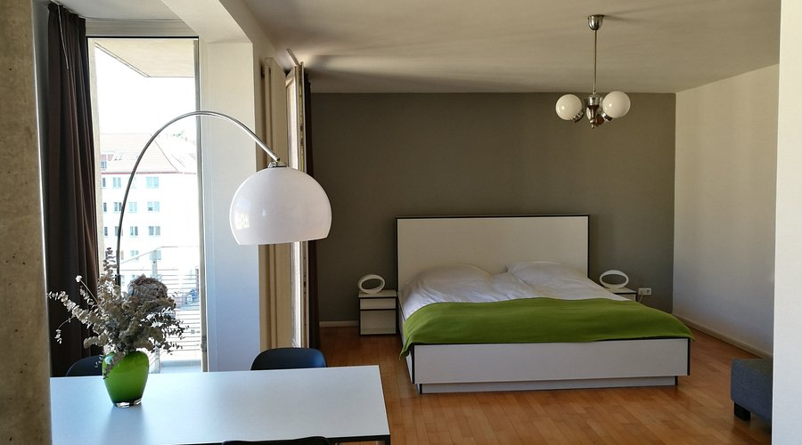
Your Berlin Base · Booking #5126078467Family Apt with Balcony
Airport Transfer (Thu 5 Nov 06:20 AM arrival): take the FEX / RE20 to Potsdamer Platz, then the U2 to Rosa-Luxemburg-Platz (the old "FEX to Hbf then U2" and "RE8 to Alexanderplatz" notes were both wrong and are gone). Buy an ABC ticket because BER sits in zone C, validate the paper ticket in the red/yellow machine before boarding, and treat the exact departure as subject to a live check on the BVG/DB app that morning. ~07:45–08:00 bag drop at Linienstraße 60 is unconfirmed — ask at reception, and keep Berlin Hbf lockers as the backup; nothing has been reserved or guaranteed. Official check-in is 14:00–23:00, so the route comes back here at ~15:30 to check in and rest before dinner. Check-out Sun 8 Nov 08:00–10:00: if the apartment cannot keep the bags for the day, use Hbf lockers and go straight to the station at the end — the bag pickup at Karlito only happens if they stored them. Walk 3 mins to #45 Zeit für Brot and 5 mins to #04 FOTOIMPEX.
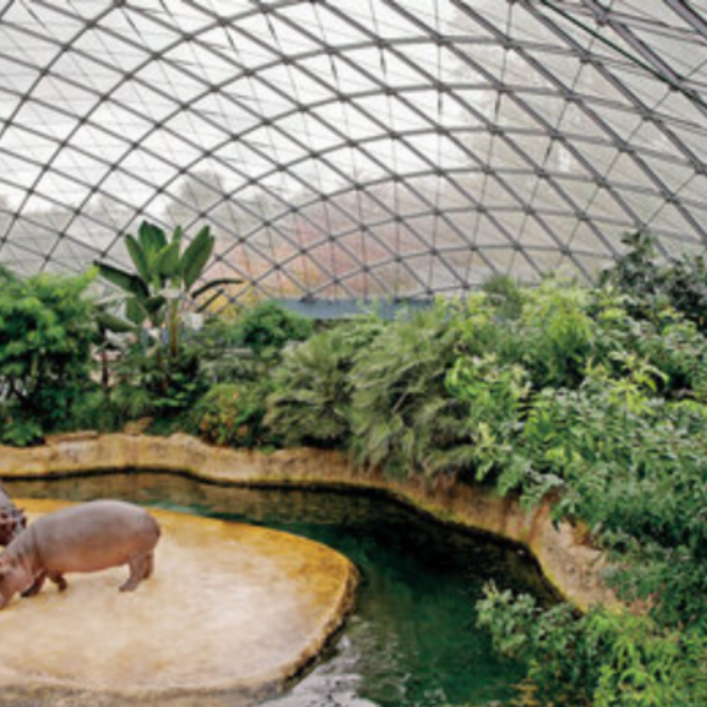
Confirmed Fri 6 Nov 18:30Museum Island → Mampe → Yorckschlösschen
How Friday 6 Nov Fits: Bakery → Museum Island → Mampe ~16:15 → 18:30 Yorckschlösschen
• From ~08:45 — one bakery, no second breakfast:SammyS (Sophienstraße 30-31, listings say 09:00 but opening time is subject to check), or a repeat at Zeit für Brot (07:00), or CANAL (Sophienstraße 5, opens 10:00). Pick one.
• 10:00–15:45 — Museum Island: one €24 per person one-day Museum Island pass covering the island museums; the Pergamonmuseum main building itself is closed, and the only Pergamon display it includes is the separately housed Das Panorama exhibition — a separate exhibition venue, not a separate paid ticket. Large special exhibitions may need an additional free time slot booked with the pass. The pass is not booked: buy it online in advance or at the desk on arrival (smb.museum ticket page). One flexible lunch inside this block (the saved The Steak Döner, Spandauer Str. 4, is a suggestion only — not booked, not fixed).
• 15:45–16:00 leave the island and allow 30–40 min to Mampe: arrival ~16:15–16:40, staying up to ~17:30 (the Hofladen closes 18:00), then a 15–20 min walk to the confirmed 18:30 Yorckschlösschen table. No Domke and no East Side Gallery on Friday.
4-Day Berlin Schedule (timeline order = numbered map pins · ↩ return legs marked · all timings approximate)
Thu 5 Nov · Day 1 (Arrival, one lunch, rest, Street Food Thursday)
06:20 Land BER → Karlito bag drop → Zeit für Brot → Holocaust Memorial / Brandenburg Gate / Reichstag exteriors → one lunch in Mitte → Hackesche Höfe → Dead Chicken Alley / Otto Weidt → FOTOIMPEX → back to Karlito to check in & rest → Street Food Thursday at Markthalle Neun:
• Pin 1 — ★ #59 Karlito Apartmenthaus (~07:45–08:00 bag drop · Booking #5126078467):FEX / RE20 to Potsdamer Platz, then U2 to Rosa-Luxemburg-Platz — the earlier "FEX to Hbf then U2" and "RE8 to Alexanderplatz" routings were wrong. ABC ticket (BER is zone C), validate the paper ticket before boarding, timetable subject to a live check. The early bag drop at Linienstraße 60 is unconfirmed — ask at reception, with Berlin Hbf lockers as the backup. Check-in is only from 14:00.
• Pin 2 — ★ #45 Zeit für Brot (~09:00 · MUST-HAVE cinnamon roll / Zimtschnecke): 3 mins from Karlito at Alte Schönhauser Str. 4 — a warm organic Zimtschnecke, a snack rather than the meal. Verified hours: Mon–Fri 07:00–20:00, Sat 08:00–20:00, Sun 08:00–18:00. Then allow ~20–30 min on foot or by S/U-Bahn to the memorial.
• Pin 3 — Holocaust Memorial → Brandenburg Gate → Reichstag exteriors (10:15–11:45): Walk the Field of Stelae, through the Gate, to the Reichstag outside. The dome needs an advance booking, so this is an exterior visit only.
• ~12:15–13:15 — One relaxed lunch in Mitte, flexible and unpinned by design: first choice Ständige Vertretung (Schiffbauerdamm 8, daily 11:00–01:00 per staev.de), second choice Sophien 11 (Sophienstraße 11). One lunch only — never both, and neither is reserved. Both have their own optional pin in the Thu filter so you can navigate to whichever you choose.
• Pin 4 — ★ #46 Hackesche Höfe (~13:15–14:15): Eight restored Jugendstil courtyards at Rosenthaler Str. 40, 10 mins from Karlito — EAT BERLIN inside is open Mon–Sat 11:00–19:00.
• Pin 5 — Dead Chicken Alley / Rosenthaler Str. 39 (~14:15–14:30 · #47 · Otto Weidt visit optional): The street-art alley next door to the Höfe. The free Otto Weidt Workshop for the Blind museum is open weekdays 09:00–18:00 and weekends 10:00–18:00 (museum-blindenwerkstatt.de) — go in if you still have energy, otherwise walk through and keep moving.
• Pin 6 — ★ #04 FOTOIMPEX GmbH (~14:45–15:15):Alte Schönhauser Str. 32B, 5 mins from the apartment. Verified hours: Mon–Sat 11:00–19:00 (closed Sun). Europe's analog film & darkroom flagship.
• ↩ Return to Karlito (~15:30 · unnumbered waypoint): check in (from 14:00) and actually rest for ~2h+ until ~17:45 after the overnight flights. This is the same address as Pin 1, so the map draws it as an ↩ return waypoint instead of inventing a second pin.
• Pin 7 — ★ Markthalle Neun · Street Food Thursday (17:00–22:00 · FIRST-CHOICE DINNER, dinner ~18:30/19:00):Eisenbahnstraße 42-43, Kreuzberg — leave the apartment around 17:45. Walk-in only: no table reservation, nothing booked. Backup only (never both):Anjoy, Rykestraße 11 in Prenzlauer Berg — a separate optional pin in the Thu filter, never on this route line. No Mampe and no BRLO on Thursday.
• If the flight lands late: slide the whole afternoon by the delay and trim the optional parts (courtyard browsing, the Otto Weidt visit, the film-shop browse) — never the one lunch and never the rest before dinner.
Fri 6 Nov · Day 2 (Leaving the island 15:45–16:00, 30–40 min to Mampe)
~08:45 One bakery → Museum Island from 10:00 (€24/person one-day pass, not booked) → one flexible lunch inside that block → leave 15:45–16:00 → Mampe ~16:15–16:40 until ~17:30 → CONFIRMED 18:30 Yorckschlösschen:
• Pin 1 — ★ #59 Karlito Apartmenthaus (~08:45 leave): Walk ~12–15 mins to Sophienstraße via Rosa-Luxemburg-Platz and Hackescher Markt (or U2 one stop to Alexanderplatz), then ~5 mins on foot from SammyS to Museum Island.
• Pin 2 — ★ SammyS Bakery (~09:00 · bakery choice A):Sophienstraße 30-31. Listings say it opens 09:00 but the opening time is subject to check on the day. The other no-extra-meal options are a Zeit für Brot repeat (Mon–Fri 07:00–20:00) or CANAL, Sophienstraße 5 (opens 10:00). Pick one — this is not a second breakfast.
• Pin 3 — ★ Museum Island (10:00–15:45 · start at Neues Museum):Bodestraße 1, 10178 Berlin-Mitte. One €24 per person one-day pass covers the island museums; the Pergamonmuseum main building itself is closed, and the only Pergamon display it includes is the separately housed Das Panorama exhibition — a separate exhibition venue, not a separate paid ticket. Large special exhibitions may require an additional free time slot booked with the pass. The pass is not booked: buy it online beforehand or at the desk on arrival — either is fine (smb.museum prices & tickets). ~12:30–13:30 — one flexible lunch near the island: your saved The Steak Döner (Spandauer Str. 4) is a suggestion, not booked and not fixed, and its optional pin keeps it navigable without making it a stop.
• Leave the island 15:45–16:00 — do not force a premature exit. Museum Island → Mampe is 30–40 min by U/S-Bahn plus a short walk.
• Pin 4 — ★ #48 Mampe Berlin (~16:15–16:40 arrive, stay up to ~17:30 · NON-NEGOTIABLE ON FRIDAY):Am Tempelhofer Berg 6, Kreuzberg. Verified hours: Mon–Fri 10:00–18:00 (Hofladen closes 18:00), Sat 12:00–18:00. Berlin's oldest 1831 spirits manufactory in the historic brewery courtyard — taste & buy Halb & Halb, Elefantenkümmel & Kreuzberg Gin. It is a shop visit, nothing reserved.
• Pin 5 — ★ CONFIRMED 18:30 Dinner: Yorckschlösschen (18:30–21:30 · 2 people):Yorckstraße 15, 10965 Berlin-Kreuzberg, a 15–20 min walk from Mampe (S/U-Bahn as the lazy backup). Your only confirmed Berlin restaurant table, and finishing Mampe around 17:30 leaves a comfortable margin. No Domke stop and no East Side Gallery on Friday.
Sat 7 Nov · Day 3 (Leave 09:00 · zoo ~09:30–16:30 · at most one optional add-on)
Leave the apartment ~09:00 → Berlin Zoo ~09:30–16:30 (#63) with a proper lunch inside → ~19:00 BRLO Brwhouse (#57), the only planned dinner/beer stop of the day:
• Pin 1 — ★ #59 Karlito Apartmenthaus (~09:00 departure): Direct ~18-min U2 ride to Zoologischer Garten, so you walk in around 09:30.
• Pin 2 — ★ #63 Berlin Zoological Garden (~09:30–16:30 · THE WHOLE DAY):Hardenbergplatz 8. Verified November hours: 09:00–16:30, last admission 15:30, and the houses and zoo restaurants close at 16:00 — plan the animals first and eat in between. Giant Pandas, glass-domed Hippo House, primates & giraffes at an unhurried pace. Lunch is a proper meal inside the zoo (e.g. Waldschänke), not an extra stop.
• 16:30–18:15 — at most ONE optional add-on, and neither is a required stop:Option A the KaDeWe gourmet floor (Tauentzienstraße 21-24, a few minutes from the zoo), or Option BC/O Berlin at Amerika Haus (Hardenbergstraße 22, daily 11:00–20:00). On the map they are the labelled A and B optional pins (visible in the Sat filter, each with its own Google Maps search) and they are never both stops: neither joins the zoo → BRLO route line, and each has its own separate "Alternative A / Alternative B" directions link next to the map.
• Pin 3 — ★ #57 BRLO Brwhouse (~19:00 · ONLY PLANNED DINNER/BEER):Schöneberger Str. 16 (Park am Gleisdreieck) for craft beer and the BRWHouse kitchen's current seasonal, vegetable-focused shared plates (brlo.de) — the older "smokehouse plates" framing is not the current default. Sat hours are normal (12:00–24:00, kitchen to 22:00), but booking availability is unverified and nothing is reserved — walk in, or call ahead on the day. No second pub and no extra meal on Saturday.
• About Hamy: it was a restaurant suggestion, not one of your saved Google list places, and it is not scheduled on any day of this trip. If it ever happens it would only ever be an unscheduled Saturday dinner — and Saturday is already the zoo all day plus BRLO.
Sun 8 Nov · Day 4 (Checkout 08:00–09:00 · conditional bag run · Hbf 20:15)
08:00–09:00 Karlito pack + checkout (window 08:00–10:00) → Berlin Wall Memorial 09:20–10:15 → #44 Mauerpark Sunday flea market 10:30–12:15 → Domke lunch 13:00–13:45 → East Side Gallery 14:00–15:30 → early dinner / train food ~17:30 → conditional bag run → Berlin Hbf 20:15 for the 20:52 ÖBB Nightjet NJ 408:
• Pin 1 — ★ #59 Karlito Apartmenthaus (08:00–09:00 pack + checkout): Checkout is 08:00–10:00, so pack and settle the bill before you leave for Bernauer Straße (Booking #5126078467). Ask about keeping bags for the day; that storage is unconfirmed and Berlin Hbf lockers are the backup. Nothing is booked.
• Pin 2 — Berlin Wall Memorial at Bernauer Straße (09:20–10:15, ~20 min from Karlito):Bernauer Str. 111 — preserved Cold War death-strip, watchtower & outdoor exhibition (visitor centre Tue–Sun 10:00–18:00; the outdoor site is open daily).
• Pin 3 — ★ #44 Mauerpark Flohmarkt (10:30–12:15 · Sunday only): Walk up Bernauer Straße to Bernauer Str. 64. Verified Sundays 10:00–18:00 via berlin.de. Vintage cameras, lenses, DDR antiques, street food & buskers. Note: never link mauerparkmarkt.de — that domain is hijacked by casino spam.
• 12:15–13:00 — travel to Friedrichshain, allow 45–60 min from the flea market to Domke.
• Pin 4 — ★ #14 Fleischerei Domke (13:00–13:45 · SUNDAY LUNCH):Warschauer Str. 64, Friedrichshain. Verified hours: Sun 09:00–21:00 (Mon–Fri 06:00–21:00, Sat 07:00–21:00). Mettbrötchen availability at Sunday lunchtime is NOT confirmed — call +49 30 291 76 35 beforehand and treat the counter as a request, not a guarantee.
• Pin 5 — ★ #21 East Side Gallery (14:00–15:30 · in daylight):Mühlenstraße, the 1.3 km painted Berlin Wall, 10 mins from Domke and the natural close to the Friedrichshain loop before sunset.
• 15:30–17:30 — a slow hour or two (coffee, a gallery, or simply resting), then ~17:30 early dinner or train food (no extra pin).
• ↩ Return to Karlito (~18:15–19:00 · unnumbered and conditional): this only happens if the apartment stored your bags. If you chose Berlin Hbf lockers, skip this waypoint and ride straight to the station — no storage arrangement is assumed anywhere.
• Pin 6 — Berlin Hauptbahnhof (20:15 with bags · 20:52 Departure): Board ÖBB Nightjet NJ 408, Bahnsteig 3 → Freiburg (Brsg) Hbf Mon 06:17 (Coach 309, berths 52/56, Double Deluxe with shower/WC, breakfast included). Print the ticket on white A4 and carry photo ID. No Prenzlauer Berg afternoon wander and no closed-Sunday shops on this route. The 45-minute buffer to 20:15 absorbs a delayed lunch or a slow bag run.
Berlin Complete Scorecard: Included, Optional, Pending & De-listed Places
Thu 5 – Sun 8 Nov Base: Family Apartment with Balcony. Check-in Nov 5 from 14:00, check-out Nov 8 08:00–10:00. Early bag drop and day-of-checkout storage are both unconfirmed (Hbf lockers backup). Pinned on all 4 days, and the Thursday check-in/rest plus the Sunday bag pickup appear as ↩ return waypoints, not extra pins.
CONFIRMED TABLE
18:30 Res.
Yorckschlösschen (Yorckstraße 15, 10965 Berlin)
Fri 6 Nov (18:30 confirmed for 2 people): Historic Kreuzberg jazz & soul tavern and your only confirmed Berlin restaurant reservation, a 15–20 min walk from Mampe after the ~16:15–17:30 spirits window.
INCLUDED (Non-Negotiable)
#48
Mampe Berlin (Am Tempelhofer Berg 6)
Fri 6 Nov (~16:15–16:40 arrive, up to ~17:30): Verified Mon–Fri 10:00–18:00, Hofladen closes 18:00, and 30–40 min from Museum Island. Deliberately not on Thursday — Thursday ends with Street Food Thursday instead.
INCLUDED (Sat 7 Nov)
#63
Berlin Zoological Garden
Sat 7 Nov (leave 09:00 · ~09:30–16:30): Verified November hours, last admission 15:30, houses and zoo restaurants close 16:00. Proper lunch inside the zoo (e.g. Waldschänke) instead of an extra stop.
INCLUDED (Sat 7 Nov)
#57
BRLO Brwhouse (Schöneberger Str. 16)
Sat 7 Nov (~19:00): The sole planned dinner/beer stop of the day, with the current seasonal vegetable-focused shared plates (brlo.de) rather than the old smokehouse framing. Sat 12:00–24:00 are normal hours, but booking availability is unverified — nothing is reserved.
INCLUDED (Sun 8 Nov)
#14
Fleischerei Domke (Warschauer Str. 64)
Sun 8 Nov (13:00–13:45 Sunday lunch): Verified Sun 09:00–21:00, 45–60 min from Mauerpark. Mettbrötchen availability at Sunday lunchtime is unconfirmed — call +49 30 291 76 35. No Silo and no second restaurant is scheduled after Domke.
INCLUDED (Thu 5 Nov)
#45, #46, #47, #04, Markthalle Neun + Memorial
Zeit für Brot (#45), Holocaust Memorial/Brandenburg Gate/Reichstag exteriors, Hackesche Höfe (#46), Dead Chicken Alley / Otto Weidt (#47), FOTOIMPEX (#04), Markthalle Neun Street Food Thursday
Thu 5 Nov: Memorial/Gate 10:15–11:45, one lunch 12:15–13:15, courtyards + alley + FOTOIMPEX 13:15–15:15, Karlito check-in and a ~2h+ rest to ~17:45, dinner ~18:30/19:00. The lunch and the rest are deliberately unpinned. Street Food Thursday is walk-in only — no reservation.
INCLUDED (Fri 6 Nov)
SammyS + Museum Island
SammyS (Sophienstraße 30-31), Museum Island one-day pass (€24/person, start at Neues Museum, Bodestraße 1)
Fri 6 Nov: One bakery only (SammyS ~09:00, opening subject to check; alternatives = Zeit repeat or CANAL at 10:00), then museum wandering 10:00–15:45. Pass not booked (online or on arrival); the Pergamonmuseum main building is closed, the only Pergamon display the pass includes is the separately housed Das Panorama exhibition, and that is a separate venue rather than a separate paid ticket.
INCLUDED (Sun 8 Nov)
#44, #21 + Wall & Hbf
Berlin Wall Memorial, Mauerpark Flohmarkt (#44), East Side Gallery (#21), Berlin Hbf (Nightjet NJ 408, Coach 309, berths 52/56)
Sun 8 Nov: Wall Memorial 09:20–10:15, Mauerpark 10:30–12:15, Domke 13:00–13:45, East Side 14:00–15:30, early dinner/train food ~17:30, conditional Karlito bag pickup ~18:15–19:00, Berlin Hbf with bags by 20:15 for the 20:52 departure.
OPTIONAL (Thu 5 Nov lunch)
#15 + Sophien 11
Ständige Vertretung (Schiffbauerdamm 8) and Sophien 11 (Sophienstraße 11)
One lunch only: Ständige Vertretung is first choice (daily 11:00–01:00, staev.de), Sophien 11 the second. Neither is booked. Both are visible as optional pins in the Thu filter and sidebar for navigation, and neither appears on the Thu route line.
BACKUP (Thu 5 Nov dinner)
Anjoy
Anjoy (Rykestraße 11, Prenzlauer Berg)
Backup dinner only: Street Food Thursday at Markthalle Neun is the first choice. Do one, never both. Anjoy was a suggestion rather than a saved Google list place; it is discoverable in the Thu filter but excluded from the Thursday route line.
OPTIONAL (Fri 6 Nov)
The Steak Döner + CANAL
The Steak Döner (Spandauer Str. 4), CANAL (Sophienstraße 5)
Suggestions only: The Steak Döner is the flexible island lunch idea (not booked, not fixed, saved pin); CANAL is bakery option C because it opens 10:00. Both are optional pins in the Fri filter with individual navigation and both stay outside the Friday route line.
OPTIONAL A / B (Sat 7 Nov)
KaDeWe or C/O Berlin
KaDeWe gourmet floor (Tauentzienstraße 21-24) and C/O Berlin at Amerika Haus (Hardenbergstraße 22)
At most ONE, and neither is required: the default Saturday route is zoo → BRLO. They are the labelled A and B optional pins (discoverable in the Sat filter and sidebar) that never join the main polyline, and each has its own separately labelled alternative directions link.
PENDING (not scheduled)
#11
Mały Książę Polish Groceries (Lilienthalstraße 6, by Südstern)
Unresolved trip priority: your Polish-grocery must-do (kiełbasa, pierogi, chocolate) stays on the list but has no assigned day and no fixed time — so no day route claims it. TRUE saved coordinates 52.488025, 13.407631; it is roughly 1.9 km / 25-min walk from Yorckschlösschen — the old pin near Mampe and the "550 m" claim were wrong. Plan it separately.
SAVED ONLY (no day)
Hamy · #12 Silo · #19 RAW · #20 Boxhagener · #05 Safelight · #03 Foto-Meyer · Super Shawarma · Stasi Museum
Hamy (Hasenheide 10 — a suggestion, not a saved Google list pin), Silo Coffee (Gabriel-Max-Str. 4), RAW-Gelände (#19), Boxhagener Platz (#20), Safelight (#05), Foto-Meyer (#03), Super Shawarma, Stasi Museum
Kept for discoverability, not scheduled: Saturday is zoo all day + BRLO and Friday is Museum Island + Mampe, so there is no Hamy meal, no Silo coffee stop, no Friedrichshain café loop, no second camera shop and no Stasi Museum visit. Hamy is only ever a hypothetical unscheduled Saturday dinner and was never one of your saved Google list places. The 3 Nov 2026 snapshot added The Steak Döner, Super Shawarma and Stasi Museum to your list; only The Steak Döner has a (suggestion-only) role.
OMITTED #1
#22
DDR Museum
Hidden from daily maps (view via "Show Omitted Pins"): Cramped tourist basement; replaced by the authentic Berlin Wall Memorial on Sun 8 Nov.
Hidden from daily maps: Far west of Mitte. Taste MXPSM schnaps at the Michelberger Hotel bar by RAW-Gelände instead of detouring to Wedding.
OMITTED #3
Topography
Topography of Terror (Niederkirchnerstraße 8)
Hidden from daily maps: The Thu 5 Nov morning is fixed as Memorial → Brandenburg Gate → Reichstag exteriors, then lunch and the Mitte courtyards. It sits 600m from the Memorial, so it remains the obvious rainy-day swap.
OMITTED #4
#13
Avci Bistro (Kopernikusstraße 30)
Hidden from daily maps: Friday now runs bakery → Museum Island → Mampe → Yorckschlösschen, so the old tea stop is gone. Still handy around the corner from Domke if the Sunday butcher counter is shut.
OMITTED #5
#60
The Berlin Art Market by the Zeughaus (Am Zeughaus 1-2)
Hidden from daily maps: Saturday is given entirely to the zoo and BRLO. The market (Sat & Sun 11:00–17:00) is a swap option only if you drop both optional Saturday add-ons.
OMITTED #6
#49
Dr. Kochan Liquor Culture (Immanuelkirchstraße 4)
Hidden from daily maps: Sunday hours are closed/unconfirmed, and Sunday no longer includes a Prenzlauer Berg shop crawl — it runs Wall Memorial → Mauerpark → Domke → East Side Gallery → Nightjet.
PLAN HONESTY — WHAT IS AND IS NOT CONFIRMED IN BERLIN:
• Confirmed: the Karlito apartment booking (#5126078467), the Fri 6 Nov 18:30 Yorckschlösschen table (2 people) and the Sun 8 Nov 20:52 Nightjet NJ 408. The Yorckschlösschen table is the only confirmed Berlin restaurant reservation. Nothing else is booked: no Museum Island pass, no BRLO table, no Markthalle Neun table, no restaurant booking for Ständige Vertretung, Sophien 11, Anjoy, The Steak Döner or CANAL.
• Unconfirmed and to ask on the day: Karlito's early bag drop (Thu) and day storage (Sun) — no luggage-storage arrangement has been agreed or confirmed, so the Sunday bag pickup is conditional and Hbf lockers are the fallback; Domke's Sunday Mettbrötchen availability; the BRLO table; and the museum pass, which is simply unbooked (buy online or on arrival).
• Hours are as published, not as promised: SammyS opening (~09:00, subject to check), FOTOIMPEX (Mon–Sat 11:00–19:00), Otto Weidt (weekdays 09:00–18:00, weekends 10:00–18:00), Ständige Vertretung (daily 11:00–01:00) and the BER → Potsdamer Platz FEX/RE20 + U2 routing is subject to a live timetable check (ABC ticket, paper ticket validated before boarding).
• Route honesty: the dashed line follows the numbered stops of that day, including the unnumbered ↩ return waypoints for the Thursday check-in/rest and the conditional Sunday bag run. Flexible lunches and the Thursday rest are unpinned, so the line skips them; optional/backup pins are shown per day but never join the line or the day's Google directions. Timings are approximate and every block is subject to transport and opening-hour variation.
• Media honesty (REQ-09 media gap): several places added or re-pinned in this revision have no verified photograph. Their map popups deliberately show no image rather than a stand-in picture that would misrepresent the venue.
• Deliberately absent: the old Prenzlauer Berg Sunday afternoon wander, Mampe/BRLO on Thursday, Domke/East Side on Friday, a second restaurant after Domke, Hamy as a scheduled meal, and every closed-Sunday shop. The Polish-grocery priority (Mały Książę) remains pending with no assigned day.
Leg 2: Freiburg, Baden-Baden, Lake Titisee & Colmar Wine Tour (Mon 9 – Fri 13 Nov 2026)
Verified Accommodations & Rail Links:
• Mon 9 Nov (06:17 AM Arrival via ÖBB Nightjet 0698 9390 6002 7647) – Thu 12 Nov (By 12:00 PM Checkout):Freiburg Airbnb — Schlossbergblick 1-Zimmer Dachgeschoss Apartment (hosted by Mario & Nadine · Confirmation Code: HMKTPHQE4H) at Mathildenstraße 14, 79106 Freiburg im Breisgau (Stühlinger). Entire home for 2 adults, just 6 minutes' walk (450m) west of Freiburg Hbf across the station bridge! Your host confirmed early luggage drop right after your 06:17 AM Nightjet arrival before 15:00 check-in, and two self-service laundromats (30°grad SB Waschsalon at Lehener Str. 27 & Wasch & Fun at Egonstraße 25) sit just 4–5 mins walk away!
• Thu 12 Nov (Check-in 15:00–00:00) – Fri 13 Nov (Check-out 01:00–11:00 · 16:45 TGV Departure):Logis Hôtel Saint-Martin Colmar (38 Grand'Rue, 68000 Colmar · Superior Double or Twin Room · Booking #6935982825) — right in the medieval heart of Colmar Old Town & Petite Venise!
06:17 AM Sleeper Arrival & Mid-Trip Laundry Advantage: Walk 6 minutes from Platform 3 at Freiburg Hbf to Mathildenstraße 14, drop your suitcases with Mario & Nadine at 06:35 AM (official check-in after 15:00, check-out Nov 12 by 12:00), and walk straight into Freiburg Old Town for a 07:30 breakfast at #38 Kolben Kaffee (VERIFIED Mon–Sat 07:30–18:00; #24 SAMS Café opens 08:30 as the alternative). #27 Günter Coffee Store is a roastery store that opens at 10:00 Mon–Fri, so it becomes an optional late-morning browse rather than breakfast. For your mid-trip laundry reset, 30°grad SB Waschsalon (Lehener Str. 27, open Mon–Sat 06:00–23:00) is a 4-minute walk around the corner.
Superior Double or Twin Room (Check-in Thu 12 Nov 15:00–00:00, check-out Fri 13 Nov by 11:00): Located right on Colmar's historic Grand'Rue steps from the Koïfhus and Petite Venise canals, and ~15 mins walk (or 5 mins taxi) from Gare de Colmar for your CONFIRMED Friday 13 Nov 10:00 biodynamic wine tasting at Domaine François Baur in Turckheim and your 16:45 TGV INOUI 2362 (Ref: NZM3KL) to Strasbourg & Munich.
WHY THE 5 SCHAUINSLAND PINS (#32–#36) ARE OMITTED — THE CABLE CAR IS NOT THE REASON:
Per schauinslandbahn.de, the 2026 fall revision (Herbstrevision) runs 16 Nov – 4 Dec, so the Schauinslandbahn cable car (#35) and Die Bergstation restaurant (#36) WOULD have been open on 9–13 Nov. The 5 pins are omitted for two different, honest reasons: (a) the Museums-Bergwerk silver mine (#32) closed for the season in early November, Schniederlihof (#33) is May–Oct only, and Holzschlägermatte (#34) is only a mountain pass stop on that same out-of-season Schauinsland circuit; and (b) you chose Lake Titisee for Wednesday 11 Nov instead. No cable-car closure is claimed here.
5-Day Black Forest & Alsace Schedule (With Exact Dates for Baden-Baden & Titisee)
Mon 9 Nov · Day 1
06:17 AM Arrival at Freiburg Hbf → Early Bag Drop at Mathildenstraße 14 → Freiburg Old Town Culinary & Wine Loop:
• 06:17–07:15: Arrive Freiburg Hbf (platform 3) on the Nightjet → walk 6 mins to Mathildenstraße 14 for the host-confirmed ~06:35 bag drop (official check-in is after 15:00).
• 07:30–09:00: Breakfast at #38 Kolben Kaffee (VERIFIED Mon–Sat 07:30–18:00). Alternative: #24 SAMS Café, which opens 08:30. #27 Günter Coffee Store opens at 10:00 Mon–Fri — it is a roastery store, not a breakfast café.
• 09:00–10:30: Browse Freiburg's cathedral market (Münstermarkt) on Münsterplatz.
• 10:00–12:00 (Optional): Late-morning coffee browse at #27 Günter Coffee Store (Mon–Fri 10:00–17:00, Sat 09:00–18:00).
• 12:00–14:30: Lunch at #31 Markthalle Freiburg (VERIFIED Mon–Thu 08:00–20:00) + Black Forest cake (Schwarzwälder Kirschtorte) at #39 Confiserie Gmeiner (Mon–Fri 09:30–18:30) or #26 café hinterzimmer. (Mon–Sat 12:00–18:00).
• 15:00–16:30: Official check-in & rest at Mathildenstraße 14.
• 17:30–21:00: Baden wine on the cathedral square at #11 Alte Wache - Haus der badischen Weine (VERIFIED Weinbar Mon–Sat 10:00–21:00), then unfiltered organic Inselhopf lager & dinner at #10 Hausbrauerei Feierling (VERIFIED Gaststätte 11:00–24:00; the Biergarten is weather-limited in November). #09 Freiburgs Finest is not on Monday evening — it closes at 18:00 and moves to Thursday morning.
Tue 10 Nov · Day 2
Scheduled Bathhouse Day — Day Trip to Baden-Baden (#06 Friedrichsbad & #40 Café König):
• 08:30–09:30: Walk 6 mins from Mathildenstraße 14 to Freiburg Hbf → take the direct ICE north to Baden-Baden (fastest 43 mins) + Bus 201 to Leopoldsplatz. RE7 (~75 mins) is the slower fallback.
• 10:00–13:30: Experience the 3-hour, 17-station Roman-Irish thermal bath ritual inside the Renaissance temple #06 Friedrichsbad (VERIFIED daily 09:00–22:00, last admission 19:00; towels/sheets provided). Note: the soap-brush massage is offered Mon/Thu/Sun only, so it is not available on Tuesday — the 17-station ritual works fully without it.
• 14:00–16:00: Relax over Black Forest gateau, pralines & hot chocolate at the grand 18th-century salon #40 Café König (VERIFIED Mon–Sat 08:30–18:30, 10 mins walk from Friedrichsbad), then return by train to Freiburg for a relaxed evening near Mathildenstraße.
• Optional swap:#07 Wirtshaus zur Geroldsauer Mühle (your saved pin; hours to reconfirm) in the woods south of town, reachable by bus 245 — only if you want a country inn meal instead of the Café König stop.
Wed 11 Nov · Day 3
Scheduled Alpine Lake Day — Lake Titisee (Höllentalbahn Scenic Train) + Freiburg Schlossberg & Wiehre:
• 09:10–09:49: Walk 6 mins to Freiburg Hbf and board the S1 / S10 Höllentalbahn through the dramatic Ravenna Gorge up into the High Black Forest to Lake Titisee (35–39 mins; at least 2 trains per hour).
• 10:00–14:00: Stroll the pine-fringed shores of Lake Titisee, sample smoked Black Forest ham (Schwarzwälder Schinken) and Kirschwasser, or relax in the palm-lined thermal lagoon of Badeparadies Schwarzwald. No Schauinsland excursion is added — you declined it for this trip.
• 15:00–17:00: Return to Freiburg → ride the Schlossbergbahn funicular, which runs in November (e.g. Mon 10:00–18:00), up to #37 Schloss-Café Freiburg for sunset views over the cathedral spire & Rhine valley (sunset ~16:40), or stroll south across the Dreisam river to #30 Johanneskirche & #25 Bäckerei Bühler (Mon–Fri 07:00–18:00 — an easy optional bakery stop on Thursday morning instead).
Thu 12 Nov · Day 4
SAMS Café Breakfast → 10:00 Freiburgs Finest (Zibärtle) → 12:00 Airbnb Checkout → Cross the Rhine to Hôtel Saint-Martin Colmar:
• 08:30–09:45: Breakfast at #24 SAMS Café (VERIFIED Mon–Sat 08:30–18:00).
• 10:00–11:00:#09 Freiburgs Finest Flagship Store (VERIFIED Mon–Sat 10:00–18:00) — your Zibärtle must-visit, and the only morning slot that fits before checkout. Return to Mathildenstraße 14 and pack.
• 11:00–12:00: Check out of Mathildenstraße 14 by 12:00 PM.
• 12:15–14:15: Walk 6 mins to Freiburg Hbf → S1 to Breisach (25–30 mins) → cross-border bus 68R026 across the Rhine into Colmar (VERIFIED timetable Sep–Dec 2026, e.g. 13:31 from Breisach Bahnhof → Colmar ~14:15).
• 15:00–21:30: Check into Hôtel Saint-Martin (38 Grand'Rue, Colmar) (check-in 15:00–00:00). Easy evening right outside the door through Petite Venise, the Marché Couvert, and half-timbered Alsatian lanes over Crémant d'Alsace, tarte flambée & choucroute garnie.
Fri 13 Nov · Day 5
Confirmed 10:00 AM Biodynamic Wine Tour at #42 Domaine François Baur (Turckheim) + #41 Porte de Munster & #43 Cave de Turckheim → 16:45 TGV to Munich:
• 08:30–09:10 (Check Out of Logis Hôtel Saint-Martin · Booking #6935982825): Check-out is by 11:00; store your bags at Hôtel Saint-Martin reception (`38 Grand'Rue`) until the afternoon.
• 09:10–09:50 (Colmar → Turckheim): Take the TER train from Gare de Colmar to Turckheim (~10 mins), or a short taxi, then enter the medieval walls through #41 Porte de Munster (Obertor) (just 100m from the winery).
• 10:00–11:30 (CONFIRMED Fri 13 Nov 10:00):Visit & Tasting of Biodynamic Wines at #42 Domaine François Baur (3 Grand'rue, 68230 Turckheim · booking `815D4A45A0E85F6C` · 2 Adults · €24.00 via Winalist). Taste biodynamic Alsace Grand Cru Brand Riesling, Pinot Gris & Crémant d'Alsace.
• 11:40–12:40: Second tasting 5 minutes' walk away at #43 Cave de Turckheim (Cave Vinicole de Turckheim) — VERIFIED open 7 days year-round.
• 13:00–16:00: Return to Colmar for a leisurely Alsatian lunch → collect your bags from Logis Hôtel Saint-Martin (38 Grand'Rue) → arrive at Gare de Colmar by 16:20 (remember the mandatory SNCF luggage tags!).
• 16:45–21:46: Board 16:45 TGV INOUI 2362 (Colmar → 17:12 Strasbourg, Coach 13, Seats 308 & 307, Ref: NZM3KL) → 17:46 change in Strasbourg → TGV INOUI 9577 (Strasbourg → 21:46 München Hbf, Coach 13 Lower Deck, Seats 304 & 305)!
Black Forest & Alsace Scorecard: What's Included, Optional & Omitted
Your 4 essential Freiburg food, wine, beer & regional spirit highlights. Feierling, Alte Wache & Markthalle are Mon 9 Nov; Freiburgs Finest (#09) moves to Thu 12 Nov 10:00–11:00 because it closes at 18:00.
All sit right in Freiburg Old Town / Schlossberg between your Mathildenstraße 14 Airbnb and the cathedral.
INCLUDED (Baden-Baden Day Trip)
#06 & #40
Friedrichsbad Roman-Irish Bath (#06) & Café König (#40)
Scheduled for Tuesday 10 Nov—the classic Baden-Baden thermal bath + royal patisserie pairing.
INCLUDED (High Black Forest)
Must-Do
Lake Titisee (via Höllentalbahn S1)
Scheduled for Wednesday 11 Nov—your chosen lake day instead of Schauinsland (mine closed for the season; Schniederlihof May–Oct only). The cable car itself is open 9–13 Nov; the omission is not a cable-car closure.
INCLUDED (Confirmed Wine Tour)
#41, #42, #43 + Hotel
Hôtel Saint-Martin Colmar + Confirmed 10:00 AM Domaine François Baur (#42, `3 Grand'Rue, Turckheim`, Ref `815D4A45A0E85F6C`), Porte de Munster (#41) & CELLAR TURCKHEIM (#43)
Locked into Fri 13 Nov (CONFIRMED 10:00 tasting, €24 for 2 adults) before your 16:45 TGV from Colmar to Munich; the hotel is the Thu 12 – Fri 13 base.
OPTIONAL (If Walking South to Wiehre)
#25 & #30
Bäckerei Bühler (#25) & Johanneskirche (#30)
Nice 15-min walk south across the Dreisam river on Wed 11 Nov afternoon if you want an extra neighborhood stroll.
Why omit all 5:schauinslandbahn.de lists the 2026 fall revision as 16 Nov – 4 Dec, so the cable car (#35) and Bergstation restaurant (#36) would have been open 9–13 Nov. The real reasons: the Museums-Bergwerk (#32) season ended in early November, Schniederlihof (#33) is May–Oct only, and #34 was only a pass stop on that same out-of-season Schauinsland circuit. You also chose Lake Titisee for Wednesday.
OPTIONAL SWAP (Not in Plan)
#07
Wirtshaus zur Geroldsauer Mühle (Baden-Baden)
Your saved pin, hours to reconfirm: a country inn in the woods south of Baden-Baden reachable by bus 245. Optional swap for the Café König stop on Tue 10 Nov only if you want a full inn meal instead; after 3.5 hours in Friedrichsbad + cake, the train back to Freiburg is the easier default.
OMITTED #7
#08
Weingut Faber (Outskirts of Freiburg-St. Georgen)
Why omit: Suburban bottle-pickup address ~4 km southwest of the center with limited tasting hours. Vinothek St. Georgen is open Mon–Fri 09:00–12:30 & 15:00–19:00, Sat 09:00–14:00 — an optional stop only if you specifically want a winery visit before Colmar. Otherwise taste 30+ top Baden wines on the cathedral square at #11 Alte Wache.
OMITTED #8 & #9
#28 & #29
Hakuna Matata (#28) & Restaurant Pizzeria Grüner Baum (#29) in South Wiehre
Why omit: Casual suburban student spots (African fusion & a neighborhood pizzeria) south of the river. With only 3 nights in Freiburg, dine on authentic Baden/Black Forest cuisine at #10 Feierling and #31 Markthalle instead.
Day 1 · Friday, 13 November 2026
Colmar → Strasbourg → München Hbf & Timehouse Check-In
Leg 1: Colmar to Strasbourg on TGV INOUI 2362 (1st Class, Coach 13, Seats 308 & 307, Dual Side-by-Side). Booking NZM3KL (€11.50/person). Ensure physical ID & luggage tags are attached.
17:12 – 17:46
34-Minute Transfer at Strasbourg Gare Centrale: Pick up warm Alsatian snacks or dinner picnic supplies at the station concourse for the 4-hour ride across the Rhine.
17:46 – 21:46
Leg 2: Strasbourg to München Hbf on TGV INOUI 9577 (1st Class, Coach 13 Lower Deck, Priority Seats 304 & 305, €73.00/person). Free Wi-Fi via _SNCF_WIFI_INOUI.
21:46 – 22:25
München Hbf → Timehouse Munich (Leopoldstraße 204a, 80804 Munich · Booking #6724144172):
• Timehouse Munich (Leopoldstraße 204a, 80804 Munich) — our only Munich hotel: Reception closes at 22:30; you requested late check-in and Timehouse instructed you to message their WhatsApp on arrival (or email wecare@timehouse.de / call +49 89 230 200 00 for your 24/7 Keybox code in case of delay). Take a taxi from Hbf North Exit (~15 mins, ~€25) or S-Bahn to Marienplatz + U6 towards Garching-Forschungszentrum to Nordfriedhof (or Alte Heide).
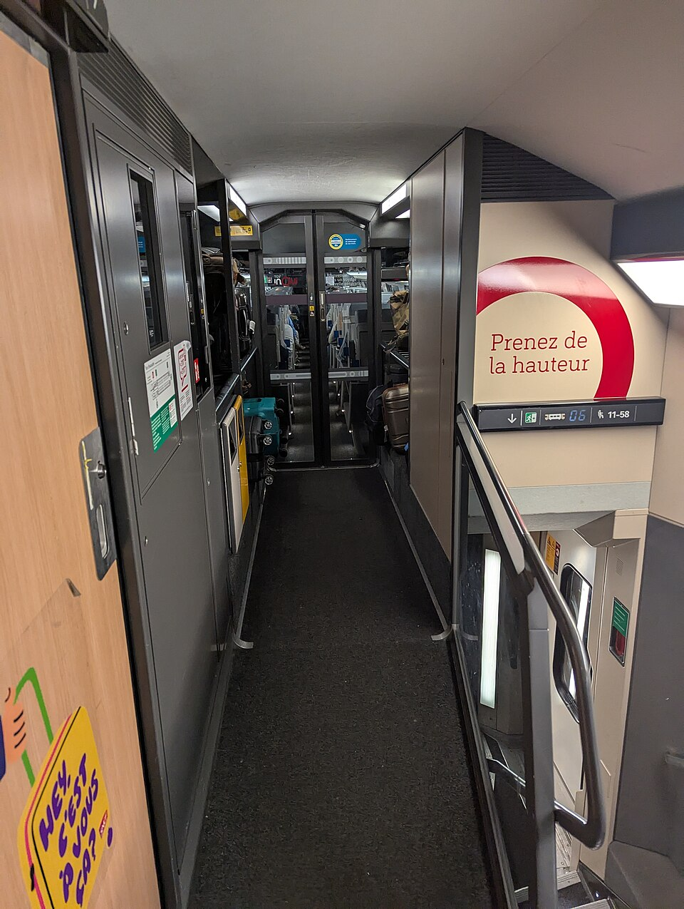
Your Confirmed Munich Base — Timehouse Serviced Apartments (Schwabing)
Your sole Munich hotel for all six nights is Timehouse Munich Serviced Apartments (Leopoldstraße 204a, 80804 Munich, Booking #6724144172) in northern Schwabing: full designer kitchen (dishwasher, stove, fridge), in-building laundry room, REWE nearby, and a 6-min walk to the 25-min Lufthansa Express Bus stop. No overlapping Munich booking remains — this is the single confirmed address for 13–19 Nov.
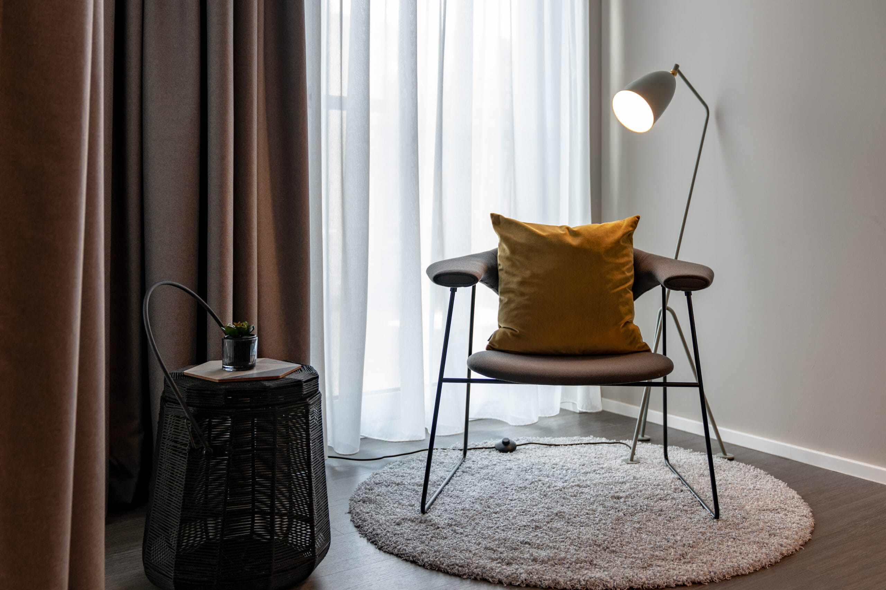
Day 2 · Saturday, 14 November 2026
Straight-Line U6 Route: Julius Brantner Croissants, Weißwurst Before Noon, Old Town & Saturday Camera/Antique Loop
Why this route works effortlessly: After arriving at 22:30 Friday night, you don't need to zig-zag across Munich at 08:00. Every stop today sits along a direct North-to-South U6 line (`Nordfriedhof` → `Universität` → `Marienplatz`), hitting the Saturday-morning pastries at Julius Brantner and the Saturday-open antique/camera stores before Sunday's retail shutdown (Sonntagsruhe).
09:15 – 10:05
Stop 1 — Julius Brantner Brothandwerk (Adalbertstraße 25): Take U6 from Nordfriedhof 4 stops south to Universität (8 mins). VERIFIED hours: Tue–Fri 08:00–18:30, Sat 08:00–17:00, closed Sun/Mon — Julius Brantner bakes daily except Sun/Mon, so his signature 54-layer hand-touriertes Butter Croissant, Sourdough Baguette & Saffron Cardamom Bullar are on the counter this morning. Pick up an organic Münchner Hauslaib sourdough loaf for tomorrow's Alpine breakfast. (Moved to Wednesday 18 Nov 10:00–10:45: ★ Feinkost Olé, Georgenstraße 43 — same Maxvorstadt block as Boulangerie Dompierre. Nothing to buy here today.) (Optional Early-Bird Alternative: If you wake up at 08:00 and want an outdoor flea market first, Munich's big weekly Flohmarkt at Olympiapark or Daglfing runs Saturday 07:00–15:00).
10:30 – 11:45
Stop 2 — Traditional Weißwurstfrühstück at ★ Zum Franziskaner (Residenzstraße 9, Your Saved List #1) OR Schneider Bräuhaus (Im Tal 7) — Must Eat Before Noon / 12:00!: Ride U6 to Odeonsplatz / Marienplatz. Your saved pin Zum Franziskaner (`Note: 傳統德國嘢？`) serves a dedicated 10:00–11:30 Frühschoppen (€12.90 for 2 Weißwürste or Leberkäse + Brezn + house sweet mustard + 0.5L beer)—or visit Schneider Bräuhaus (Im Tal 7) for poached veal Weißwurst and wheat beer (Weißbier). Bavarian tradition dictates Weißwurst must never hear the church bells chime 12:00 noon!
11:55 – 14:00
Stop 3 — Marienplatz, 12:00 ★ Rathaus-Glockenspiel (List #17), Frauenkirche, Alter Peter & ★ Viktualienmarkt (List #56): Watch the 12:00 Neues Rathaus Glockenspiel jousting knights at Marienplatz, visit the twin-domed Frauenkirche, climb Alter Peter for the classic Old Town panorama, then explore your saved Viktualienmarkt (`Note: Farmer market`) and its central Viktualienmarkt Biergarten. Also stop by the GARIBALDI Marienplatz outlet (Burgstraße 2, 2 mins from Marienplatz) for Italian bottles — use this Marienplatz shop, not the Petuelring warehouse (saved pin #52, omitted from today's route).
14:15 – 15:00
Stop 4 — ★ Schmalznudel - Café Frischhut · MUST-HAVE fried bread (Auszogne) (Prälat-Zistl-Straße 8, Your Saved List #2 `Note: 炸包`): Just 1 minute walk from Viktualienmarkt. Order piping-hot, hand-stretched Schmalznudel (Auszogne — traditional Bavarian fried pastry dusted with sugar) and coffee. Flag: Café Frischhut has no official website — verify the exact hours on the day before locking the 14:15 slot; if it is closed, the Viktualienmarkt stands next door cover the gap.
15:15 – 18:15
Stop 5 — Walkable Saturday Afternoon Camera & Antique Loop via ★ Karlsplatz (Stachus, List #18):
• 15:15 Leica Store & Leica Galerie Munich (Maffeistraße 4, VERIFIED Mon–Sat 10:00–19:00): Browse flagship Leica rangefinders, pre-owned M/Q glass, and the free upstairs photo exhibition.
• 16:00 Kunst-Oase Antiques at Ottostraße 6 (7 mins walk to Karolinenplatz): Over 30 antique dealers under one roof selling porcelain, silver, and vintage optical curiosities.
• 16:50 ★ Karlsplatz (Stachus) (Your Saved List #18): Walk through the monumental Karlstor gate at Stachus directly onto Sonnenstraße.
• 17:10 Calumet Photographic / Foto-Video Sauter (Sonnenstraße 21 — not 26, VERIFIED Mon–Sat 10:00–19:00): Germany's largest merged camera & analog film superstore with inspected second-hand gear.
• Optional if time allows — Foto Erhardt (ehem. Foto Dinkel), Landwehrstraße 6 (VERIFIED Mon–Fri 09:30–18:30, Sat 10:00–16:00 — it IS open Saturdays): Munich's oldest professional camera house (since 1924) for second-hand lenses and analog film. It is only worth the detour if the antique loop runs early — it stays the Monday 16 Nov weekday fallback otherwise.
19:00 – 21:30
Stop 6 — Dinner at Reopened Haxnbauer (New Address: Im Tal 38!): Kuffler reopened the legendary 60-year-old Haxnbauer in a historic wood-paneled town hall at Im Tal 38 (2 mins from Marienplatz). Feast on 24-hour spiced-brine roasted pork/veal knuckle (Schweinshaxe), Käsespätzle, and caramelized Kaiserschmarrn.
Day 3 · Sunday, 15 November 2026 (Must-Do #1)
Full-Day Alpine Excursion to Neuschwanstein Castle
Breakfast at Timehouse Designer Kitchen + U6 to Hbf: Enjoy yesterday's Julius Brantner sourdough bread in your apartment kitchen. Because today is Sunday (weekend), your Bayern-Ticket (€44 for 2 adults in 2nd class) is valid from 00:00 midnight (on weekdays Monday–Friday it is only valid from 09:00!). CRITICAL: Write both passenger names (Tak Hin Lee, Yun Yu Tang) in ballpoint pen / ink on paper tickets and carry passports!
07:52 – 09:55
Regional Train (BRB RB 68) München Hbf (Starnberger Flügelbahnhof, Tracks 27–36) → Füssen: ~2 hours direct through Upper Bavarian foothills into the Allgäu Alps (or 08:40 train with a 4-min cross-platform change at Buchloe). Confirm the exact RB 68 departure the day before (Sat 14 Nov) on bahn.de — regional timetables shift, and if the direct train is dropped you simply change at Buchloe instead.
10:00 – 10:15
RVA Bus 73 or Bus 78 from Füssen Bahnhof → Hohenschwangau: Fully covered by your Bayern-Ticket! (Ignore your old 2012 Bus_78.pdf — buses wait directly outside Füssen station timed to every train arrival).
10:30 – 15:30
Neuschwanstein Castle (Winter Hours: 10:00 – 16:00 · CONFIRMED TOUR #475 AT 14:15!):
• Confirmed Booking Details:Tour Number 475 at 14:15 (Ticket Center Hohenschwangau · Invoice: 39901.1056944).
• CRITICAL ENTRY RULE: You must be in the castle courtyard 15 minutes prior (by 14:00 sharp)—electronic turnstiles lock out latecomers! Enjoy a relaxed lakeside stroll around Alpsee, lunch in Hohenschwangau village, and walk up (~35–40 mins) or take the horse carriage / shuttle bus by 12:45–13:00 (Marienbrücke & shuttle bus close if icy/snowy). Note: bulky rucksacks are not allowed inside the castle.
16:05 – 18:30
Sunset Return to Munich (~16:30 Sunset) & Sunday Wine Dinner: Catch Bus 78/73 back to Füssen and the regional train back to München Hbf. Dine at Weinhaus Neuner (Herzogspitalstr. 8, verified open Sundays 12:00–24:00 all winter!) or in Schwabing around Münchner Freiheit.
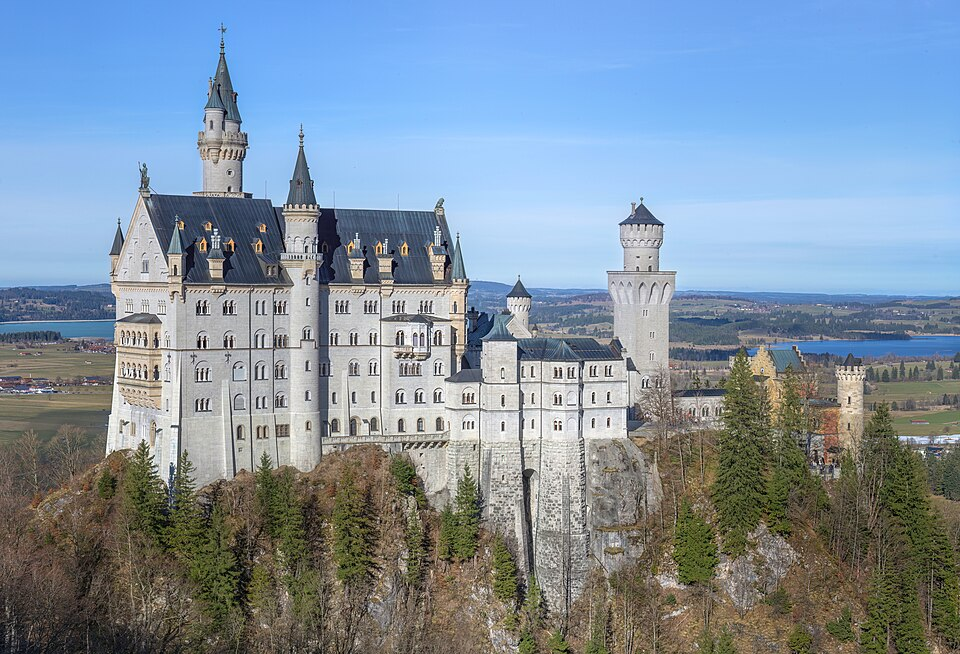
Neuschwanstein Winter Survival Notes
From 16 October to 27 March, Neuschwanstein Castle winter hours are 10:00 to 16:00 (Ticket Center 08:00–15:30). Tours are strictly timed (30 mins inside); latecomers are denied entry. Wear grip-soled shoes and thermal layers for the Alpine gorge breeze.
Day 4 · Monday, 16 November 2026 (Must-Do #2)
Dachau Concentration Camp Memorial Site, Foto Erhardt (ehem. Foto Dinkel) Weekday Pro Shop & Augustiner Wooden-Barrel Beer Hall
Transit to Dachau (Zone M-1): Buy an MVV Zone M-1 Gruppen-Tageskarte (€21.20 for 2 adults). Take U6 to Marienplatz, then S2 (towards Dachau/Petershausen) to Dachau Bahnhof (~20 mins), then Bus 726 (towards Saubachsiedlung) directly to KZ-Gedenkstätte (~10 mins, all covered by Zone M-1).
10:30 – 14:15
Dachau Concentration Camp Memorial Site (Open Daily 09:00 – 17:00, Mondays Included!): Unlike many German museums, Dachau is open every day from 09:00 to 17:00 (former crematorium closes 16:30). Free admission. Join the official English guided tour — VERIFIED daily at 11:00 AND 13:00 (2.5 hrs, €4/person at the Visitor Center) or rent the audio guide (€4.50). Dress warmly—the roll-call square (Appellplatz) is completely exposed to November wind.
15:00 – 16:15
Foto Erhardt (ehem. Foto Dinkel), Landwehrstraße 6 — VERIFIED Mon–Fri 09:30–18:30: Take S2 from Dachau straight back to Hauptbahnhof (20 mins) and walk 5 minutes to Foto Erhardt. Browse Munich's oldest professional camera house (since 1924) for second-hand lenses, analog film, and accessories. (Weekday fallback plan: if you already covered it on the optional Saturday 14 Nov stop, skip straight to the beer hall.)
17:00 – 21:00
Authentic Westend Beer Hall Crawl — ★ Augustiner Bräustuben (Landsberger Str. 19, List #54) & ★ Augustiner Bürgerheim (Bergmannstr. 33, List #23): Both of your saved Westend Augustiner pins sit 7 minutes' walk apart! Start at Augustiner Bräustuben (Landsberger Str. 19, Hackerbrücke) for gravity-poured Augustiner Edelstoff from pitched wooden barrels (Holzfass) and Obatzda, or walk 600m west to your saved gem Augustiner Bürgerheim (Bergmannstr. 33, an 1899 Art Nouveau neighborhood Wirtshaus with zero tourists, famous for Münchner Schnitzel with mustard-horseradish crust and wooden-barrel Helles).
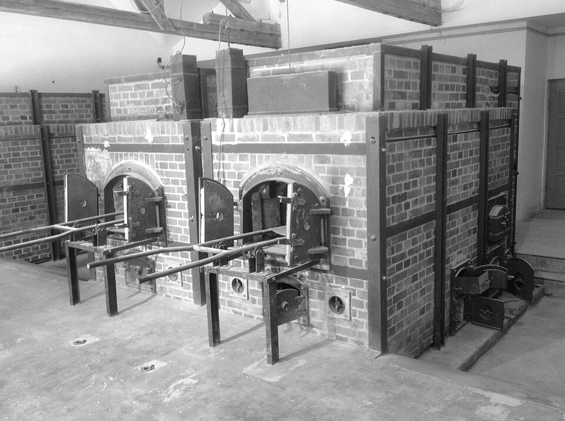
Why Monday 16 Nov is Geographically Seamless
Dachau (S2), Foto Erhardt (Hbf), and Augustiner Bräustuben (Hackerbrücke) all sit on the exact same West-Side S2 rail corridor! You never waste time crossing town twice.
Odeonsplatz, ★ Hofgarten (Your Saved List #16), Englischer Garten, Eisbachwelle Surfers & Chinesischer Turm: Take U6 from Nordfriedhof straight to Odeonsplatz (11 mins). Stroll through your saved Renaissance Hofgarten arcades (`List #16`), watch year-round river surfers ride the standing wave at Eisbachwelle (Prinzregentenstraße), then walk to the wooden pagoda at Chinesischer Turm in the Englischer Garten.
13:00 – 15:30
Museum #1 — Munich Residenz (Antiquarium & Schatzkammer / Treasury): Explore Germany's largest city palace right at Odeonsplatz. Focus on the breathtaking 66-meter Renaissance Antiquarium hall and the dazzling royal jewels of the Schatzkammer (Treasury).
16:00 – 19:00
Christmas Village in the Kaiserhof of the Residenz (Weihnachtsdorf im Kaiserhof der Residenz): Opens 16 November 2026 and runs daily 11:00 – 21:00 (free entry, Odeonsplatz entrance). Step straight out of the Residenz Museum into the palace courtyard at dusk (~16:30 sunset) as the lights glow! Sip mulled wine (Glühwein) and homemade Eierpunsch from collectible mugs (remember the Pfand mug deposit!), and browse Alpine woodcarvers. (Flexible backup/swap option: can also visit on 16 Nov or 18 Nov evening!)
19:15 – 21:45
Wine Trail Dinner — Pfälzer Residenz Weinstube & Weinhaus Neuner: Right inside the Residenz arches, Pfälzer Residenz Weinstube (Residenzstr. 1) pours Palatinate Rieslings; then walk 8 minutes to historic Weinhaus Neuner (Herzogspitalstraße 8, Munich's oldest wine tavern from 1452) to taste dry Franken Silvaner poured from the iconic flat-bellied Bocksbeutel bottle.
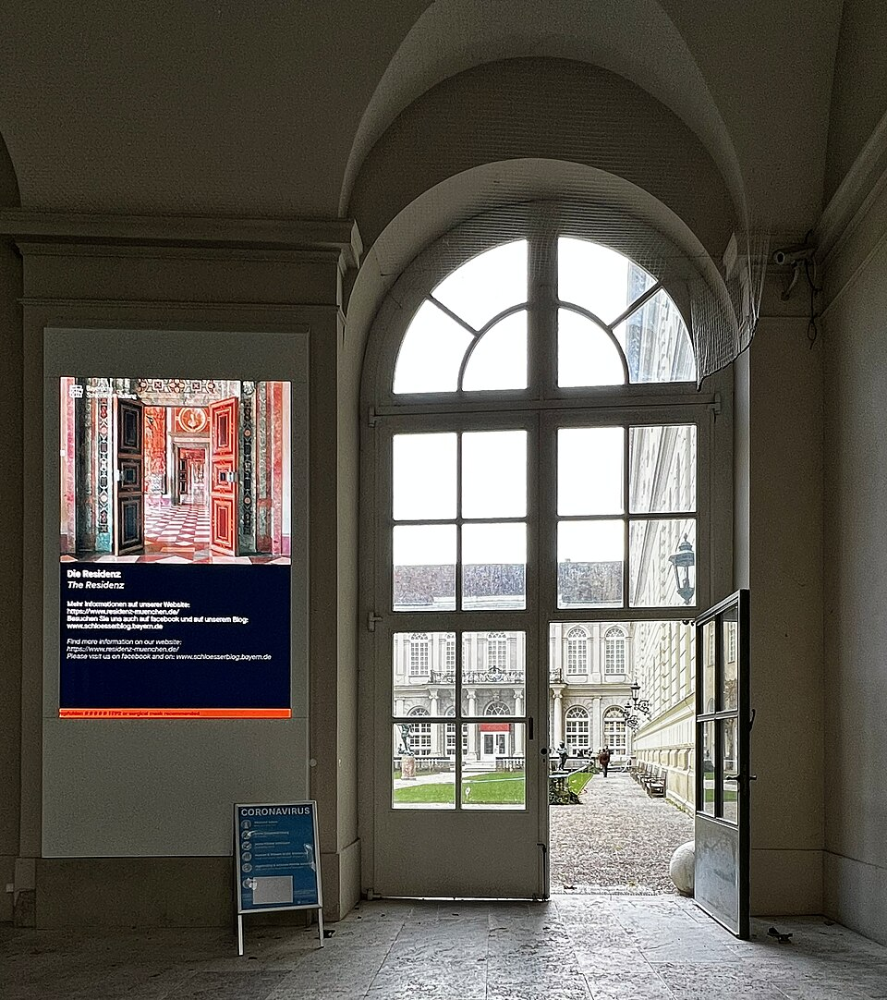
Weihnachtsdorf im Kaiserhof der Residenz
Verified 2026 dates: 16.11.2026 – 22.12.2026, open daily 11:00 – 21:00. Sheltered inside the four wings of the Kaiserhof courtyard, making it far warmer and less windy than open-square markets.
Day 6 · Wednesday, 18 November 2026
Dompierre Bakery, Feinkost Olé, Deutsches Museum Optics/Photo, Modern Local Neighborhoods & Farewell Feast
French-Bavarian Bakery Morning — Boulangerie Dompierre (Türkenstraße 21, Maxvorstadt): Start with flaky French-butter croissants and sourdough baguettes at Dompierre in Maxvorstadt.
10:00 – 10:45
Stop 2 — ★ Feinkost Olé (Georgenstraße 43, Maxvorstadt · Your Saved List #51): A 4-minute walk from Dompierre, in the same Maxvorstadt block — its new Wednesday home after moving off Saturday. VERIFIED Tue–Fri 10:00–19:00, Sat 10:00–14:00, closed Sun/Mon (hence Wednesday, right as it opens). Stock the Timehouse kitchen with Spanish wine, sherry, Manchego and Ibérico ham for the last two evenings. (Plan B: if you would rather reach the museum at opening, swap this stop to the late afternoon — closing is 19:00.)
11:00 – 13:00
Museum #2 — Deutsches Museum (Classical Optics + Photography and Film Exhibitions): Situated on Museumsinsel on the Isar River. Keep strictly to your 1–2 museum cap by visiting the renovated Classical Optics and Photography and Film permanent exhibitions.
13:15 – 17:45
Authentic Modern Local Life — Haidhausen, Glockenbachviertel & Alte Utting: Walk across the Isar to Haidhausen (the "French Quarter" around cosy Wiener Platz with its small beer garden and independent boutiques), wander through trendy Glockenbachviertel (design studios, specialty coffee, natural wine at Bar Mural on Hotterstraße 12), and visit Alte Utting (open Wed from 16:00) — a retired excursion steamship perched atop a railway bridge in Sendling converted into a beloved local hangout with street food and craft beer!
18:30 – 21:30
Farewell Evening — Hofbräuhaus Schwemme Brass Band + Final Glühwein Swap: Step into the historic vaulted ground-floor Schwemme at Hofbräuhaus am Platzl to hear the oompah brass band, or revisit the Residenz Kaiserhof Christmas Village (open until 21:00 on 18 Nov) before packing at Timehouse.
Day 7 · Thursday, 19 November – Friday, 20 November 2026 (Return Flights)
Express 25-Min Transfer from Schwabing to Munich Airport (MUC) for Etihad EY 126 (10:30 Departure / Boarding ~09:45–10:00)
Check Out of Timehouse Munich (Leopoldstraße 204a · Booking #6724144172) — our only Munich hotel: Reception opens at 06:30 (or drop keys in the express check-out box). Walk ~6 minutes to the München Schwabing / Nordfriedhof Lufthansa Express Bus stop (Ungererstraße / Schenkendorfstraße).
06:33 or 06:53
Lufthansa Express Bus from Schwabing / Nordfriedhof → Munich Airport (MUC): Departs every 20 minutes (06:13, 06:33, 06:53, 07:13). Takes just 25 minutes non-stop to MUC Terminal 2 / Terminal 1 (€12.50 online / €13.50 from driver; 2 suitcases + 1 carry-on free per person). Far faster than taking the U6 into town + 45-min S1/S8 S-Bahn!
07:18 – 10:30
Arrive at Munich Airport (MUC Terminal 1) ~07:20 for the VAT refund and bag drop; boarding ~09:45–10:00, Etihad EY 126 departs 10:30 (Booking Ref: 7AK639): Plenty of time for VAT tax-refund customs stamps (Zoll — keep tax-free camera/wine/spirit purchases accessible before checking bags!), baggage drop, and security before EY 126 boards (~09:45–10:00) and departs MUC at 10:30.
• Leg 1 (Thu 19 Nov):Etihad Airways EY 126 — Departs Munich (MUC) at 10:30, arrives Abu Dhabi (AUH) at 19:30 (1h 45m transit).
• Leg 2 (Thu 19 – Fri 20 Nov):Etihad Airways EY 870 — Departs Abu Dhabi (AUH) at 21:15, arrives Hong Kong (HKG) at 08:30 on Friday, 20 November 2026.
★ Your "Trip 2026" Google Maps List Audit — Current State (84 Places, 3 Nov 2026 snapshot)
We re-audited your shared Google Maps list (https://maps.app.goo.gl/y8QgvKNcuU69sV5q7). It holds 84 saved places in the most recent observed snapshot (3 Nov 2026), up from the 81 of the previous audit and the 66 of the first one. This is a point-in-time snapshot, not a live feed — the list is yours and keeps changing. The 3 Nov snapshot added three Berlin pins — The Steak Döner (Spandauer Str. 4), Super Shawarma and the Stasi Museum — and Nördlingen (already flagged as an impractical detour) is no longer on the list. Current split: 39 Berlin, 20 Freiburg & Black Forest, 16 Munich & Bavaria, 6 Baden-Baden & Alsace, and 3 Kraków (Poland) pins that are stale and outside this trip. Here is the honest verdict on every pin that touches your 4–20 Nov itinerary.
Region in Your List
Pins
Status for This Trip (4–20 Nov 2026)
Berlin
39
In plan (Thu 5 – Sun 8 Nov) Berlin is routed day by day with a timed itinerary per day: the scheduled stops are numbered in the order they happen, and the Thursday check-in/rest and the conditional Sunday bag pickup are drawn as unnumbered return waypoints at the apartment. Optional and backup pins (the two Thursday lunch choices and the Anjoy dinner backup, the Steak Döner lunch suggestion and CANAL, KaDeWe A and C/O Berlin B, plus saved-but-unscheduled pins such as Silo, Foto-Meyer, Safelight, RAW and Boxhagener Platz) are discoverable in their day's map filter and sidebar with individual address navigation, while staying off every route line and every day's Google directions. Six pins are de-listed behind the omitted filter. The Steak Döner is a suggestion only, Super Shawarma and the Stasi Museum get no itinerary action, Hamy is a suggestion rather than a saved Google list place and is not scheduled on any day, and the Mały Książę Polish-grocery priority is carried as pending with its corrected coordinates and no assigned day.
Freiburg & Black Forest
20
In plan (Mon 9 – Thu 12 Nov) Lake Titisee is the Wed 11 Nov day out you chose; the 5-pin Schauinsland cluster is therefore omitted (see below).
Munich & Bavaria
16
In plan (Fri 13 – Thu 19 Nov) Every pin that changes a day plan is decided in the table below: one branch swap (GARIBALDI Petuelring → Marienplatz) and two omissions (Hofbräu am Oberwiesenfeld, Königssee). The remaining pins sit inside walks you already route.
Baden-Baden & Alsace
6
All 6 in plan (Tue 10 – Fri 13 Nov) Friedrichsbad, Café König, Porte de Munster (Turckheim), Domaine François Baur, Cave de Turckheim and Hôtel Saint-Martin are all scheduled.
Kraków (Poland)
3
Out of scope — 0 used These 3 pins are stale leftovers from earlier Poland research. Poland is not on this route, so they get no itinerary action at all — keep them for a future trip or archive them.
Total
84
39 + 20 + 16 + 6 + 3 = 84 saved pins in the 3 Nov 2026 snapshot (was 81, and 66 in the first snapshot).
Munich & Bavaria (16 pins): What Is Locked, What Is Upgraded, What Is Omitted
# in List
Your Saved Google Maps Pin & Note
Current Verdict
How It Fits (or Why to Omit / Upgrade)
#02
Schmalznudel - Café Frischhut (Prälat-Zistl-Str. 8) Your Note: 炸包
In plan (Sat 14 Nov 14:15)
10/10 essential Munich institution right next to Viktualienmarkt. Order hot hand-stretched Schmalznudel (Auszogne) fried to order. Hours flagged, not asserted: Frischhut publishes no official website or dependable hours listing, so your Saturday 14 Nov visit stands but confirm the hours posted on the door (or phone ahead that morning) instead of trusting a published time.
#17
Rathaus-Glockenspiel (Marienplatz)
In plan (Sat 14 Nov 12:00)
Timed for the 12:00 noon chime right after your morning Weißwurstfrühstück.
#56
Viktualienmarkt (Viktualienmarkt 3) Your Note: Farmer market
In plan (Sat 14 Nov 12:30)
Must-visit on Saturday (closed Sunday!). Gourmet food stalls + central rotating-tap beer garden.
#54
Augustiner Bräustuben (Landsberger Str. 19)
In plan (Mon 16 Nov 17:00)
Munich's best value local brewery taproom pouring Edelstoff & Helles from wooden barrels (Holzfass), open daily 10:00–24:00.
#58
Munich Residence (Residenz) Your Note: Xmas market 16/11-22/12
In plan (Tue 17 Nov 13:00 & 16:00)
Covers both Museum #1 (Antiquarium & Treasury) and your must-do Weihnachtsdorf im Kaiserhof der Residenz (opens 16 Nov, daily 11:00–21:00).
#62
Neuschwanstein Castle (Hohenschwangau)
In plan (Sun 15 Nov full day)
Full-day Sunday Alpine trip via Bayern-Ticket (€44 for 2), timed around your confirmed 14:15 Tour #475.
#01
Zum Franziskaner (Residenzstraße 9) Your Note: 傳統德國嘢？
In plan (Sat 14 Nov 10:30 or Tue 17 Nov)
Yes—classic upscale-traditional Bavarian Wirtshaus, open daily 10:00–24:00! Famous for its house-made sweet mustard, Leberkäse, and 10:00–11:30 Frühschoppen (€12.90 for 2 Weißwürste + Brezn + 0.5L beer). Co-featured alongside Schneider Bräuhaus on Sat 14 Nov morning (and sits 1 min from Residenz/Leica Store!).
Fantastic local pick! An 1899 Art Nouveau neighborhood Wirtshaus in Westend, only 7 mins walk (600m) from Augustiner Bräustuben (#54)! Zero tourists, wooden-barrel Augustiner beer, and famous for Münchner Schnitzel (mustard-horseradish crust). Open daily 11:00–24:00 (kitchen to 21:30/22:00)—do both halls back-to-back on Mon 16 Nov evening.
#16
Hofgarten (Odeonsplatz)
In plan (Tue 17 Nov 09:45)
Renaissance Italianate garden & Diana Pavilion right next to the Residenz. You walk directly through it from U6 Odeonsplatz to the Eisbachwelle surfers on Tue 17 Nov morning.
#18
Karlsplatz (Stachus)
In plan (Sat 14 Nov 16:50)
Grand square & medieval Karlstor gate. Sits directly on your Saturday afternoon walk between Kunst-Oase Ottostraße and Calumet / Foto-Video Sauter at Sonnenstraße 21 (Mon–Sat 10:00–19:00).
Tiny, passionate Spanish wine & Ibérico tapas/deli shop in Maxvorstadt—4 minutes' walk north of Julius Brantner. Because it is open Tue–Fri 10:00–19:00, Sat 10:00–14:00 and closed Sun/Mon, it is now scheduled on your Wed 18 Nov Maxvorstadt bakery morning (not Saturday): pick up Spanish wine & Manchego for your Timehouse kitchen.
GARIBALDI is Munich's premier Italian wine & cheese merchant, but the Frohschammerstraße 14 (Petuelring) pin is their industrial warehouse office with no shop experience. Shop at GARIBALDI Marienplatz (Burgstraße 2, 2 mins from Marienplatz) on Sat 14 Nov, or GARIBALDI Maxvorstadt (Schellingstraße 60) right on your Wed 18 Nov walking route.
#53
Hofbräu am Oberwiesenfeld (Hildeboldstraße 23)
Omitted — isolated location
It sits alone in a residential block in Schwabing-West, a dead-end detour with nothing else nearby and no historic architecture. Between Augustiner Bräustuben, Augustiner Bürgerheim, Zum Franziskaner, Schneider Bräuhaus and Hofbräuhaus am Platzl, your beer-hall lineup is far stronger without it.
#55
Königssee (Berchtesgaden, 83471 Schönau)
Omitted — impractical, no free day
Impractical for this trip: at least 2.5 hours each way (train to Berchtesgaden + Bus 841) and there is no free day left — Neuschwanstein already takes Sun 15 Nov and Dachau takes Mon 16 Nov. In mid-November the boats also stop at St. Bartholomä and do not reach Obersee/Fischunkelalm, and 16:30 sunset puts the fjord in shadow by 14:30.
Pins Outside Munich & Bavaria That We Are Deliberately Excluding
The mine (Museums-Bergwerk) and the Schniederlihof farmhouse museums are winter-closed in November, and you chose Lake Titisee for Wed 11 Nov instead. Worth knowing: the Schauinslandbahn cable car itself actually runs until 15 Nov (its maintenance closure only starts after that), so this is your choice rather than a closure forced on you—swap in the cable car only if you decide to drop Titisee.
#50 MXPSM Wedding Distillery Storefront (Wedding)
Berlin (1)
Omitted — far west
The storefront sits far west in Wedding, roughly 40 minutes each way from your Berlin-Mitte base, and it is a retail counter rather than a visit. Taste MXPSM schnaps at the Michelberger Bar by RAW-Gelände (#19), which is now a saved-but-unscheduled Berlin pin rather than a planned stop.
3 unrelated Kraków pins
Kraków, Poland (3)
Out of scope — 0 used
Carried over from earlier Poland research; Poland is not part of this 4–20 Nov Germany & Alsace route. They are not stale itinerary items to action—archive them or leave them for another trip.
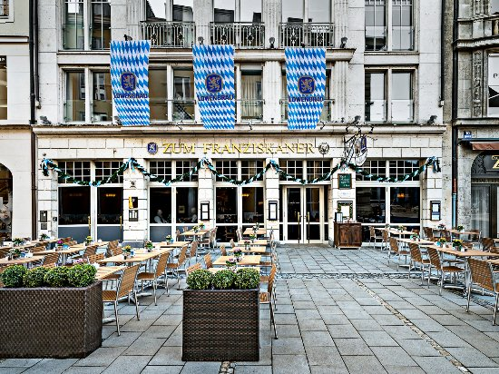
Your List #01Residenzstraße 9 · Daily 10:00–24:00
Zum Franziskaner („傳統德國嘢？“)
Right across from the Residenz & 1 minute from Leica Store Maffeistraße! Famous for its 10:00–11:30 Frühschoppen (€12.90 for 2 Weißwürste or warm Leberkäse, pretzel, house sweet mustard & 0.5L Spaten/Franziskaner beer), plus roast duck and Bavarian classics all day.
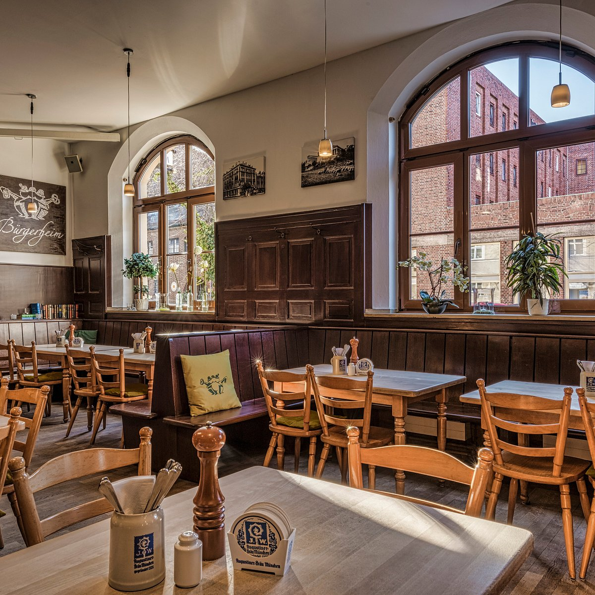
Your List #23Daily 11:00–24:00
Augustiner Bürgerheim (Bergmannstr. 33)
Built in 1899 in Munich's Westend, just 600m west of Augustiner Bräustuben (#54). Dark wood paneling, Art Nouveau windows, wooden-barrel Augustiner beer, and legendary Münchner Schnitzel (pork or chicken breaded with a mustard-horseradish crust). Kitchen runs to 21:30/22:00, so eat before 21:00.
Perfect for your Timehouse apartment kitchen! Grab Spanish Rioja, Priorat & jamón at Feinkost Olé (Wed 18 Nov morning; Tue–Fri 10:00–19:00, Sat 10:00–14:00, closed Sun/Mon), and Italian Barolo, Franciacorta & truffle pecorino at GARIBALDI Marienplatz (Burgstr. 2, 2 mins from Marienplatz).
Bavarian Delicacies & November Beer Garden / Beer Hall Guide
In mid-November (2°C–8°C), outdoor chestnut-tree beer gardens still serve beer at sunny midday (like Viktualienmarkt Biergarten & Chinesischer Turm), while evening dining moves inside wood-paneled historic Bräustuben where beer is tapped directly from wooden barrels (Holzfass).
Must-Try Local Bavarian Delicacies
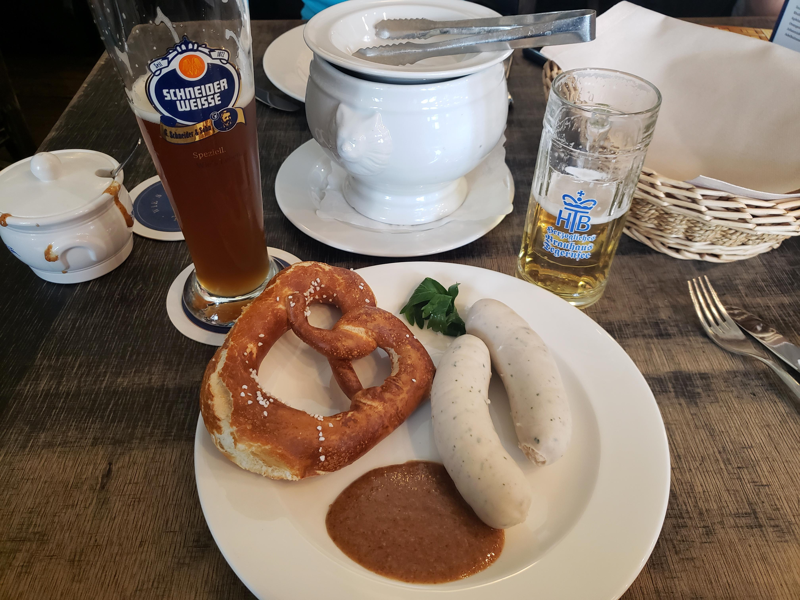
Morning RitualEat Before 12:00 Noon!
Weißwurstfrühstück (White Veal Sausage Breakfast)
Minced veal and pork back bacon seasoned with parsley, lemon, and mace. Served in hot water—never boiled—and strictly eaten before noon (12:00). Peel or slice lengthwise (Zuzeln is optional!), dip in Händlmaier sweet mustard, and pair with a fresh Brezn and Weißbier at Schneider Bräuhaus (Im Tal 7) or Augustiner Bräustuben (where 1 pair of Weißwürste costs just €2.00 during the 10:00–13:00 Zwickel Frühschoppen!).
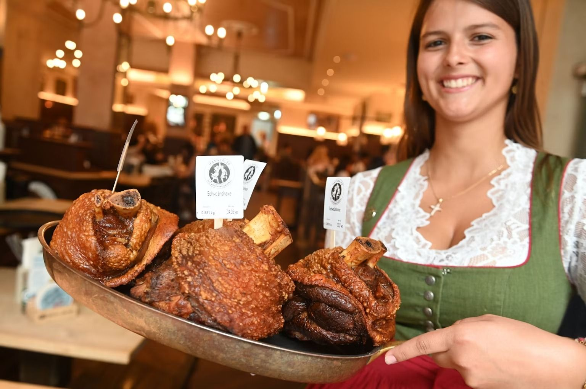
Dinner ClassicNew Address: Im Tal 38
Schweinshaxe & Krustenbraten at Haxnbauer (Im Tal 38)
Slow-roasted pork knuckle marinated 24 hours in spiced brine with crackling blistered skin (Schweinshaxe) or dark-beer-basted pork shoulder (Krustenbraten), served with elastic grated-potato dumplings (Kartoffelknödel) and warm cabbage salad. Head to Kuffler's reopened Haxnbauer at Im Tal 38 (reopened in a historic 250-seat oak-floored Wirtshaus after moving from Sparkassenstraße) or Augustiner Bräustuben.
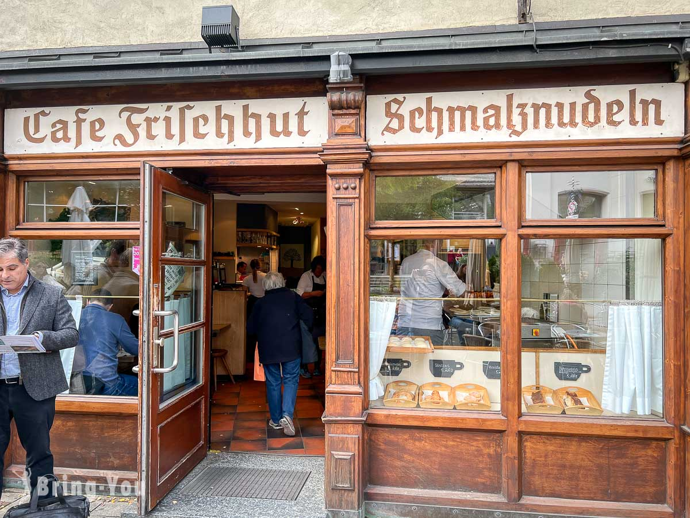
Pastry IconHours Unverified — Go Before Noon
Schmalznudel (Auszogne) at Café Frischhut
Hand-pulled yeast dough fried in clarified butter until paper-thin in the center with a puffy golden rim, dusted with sugar. Head to legendary Café Frischhut (Bäckerbrüder, Prälat-Zistl-Str. 8) by Viktualienmarkt on Saturday 14 Nov (your planned visit). ⏳ Exact hours unverified: Frischhut publishes no official website or reliable hours listing, so we do not assert an opening time—confirm the hours posted on the door or phone ahead that morning rather than relying on any published time. It is a cash-first counter, so bring small notes.
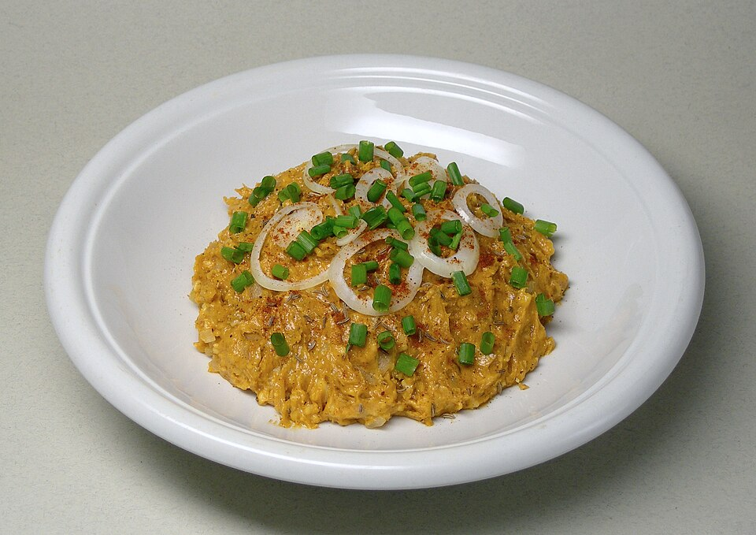
Beer Garden Staple
Obatzda & Giant Brezn
Ripe Camembert and Brie mashed with butter, sweet paprika, caraway seeds, and a splash of wheat beer, topped with raw red onion rings and chives. The ultimate companion to a 1-liter Maß of beer.
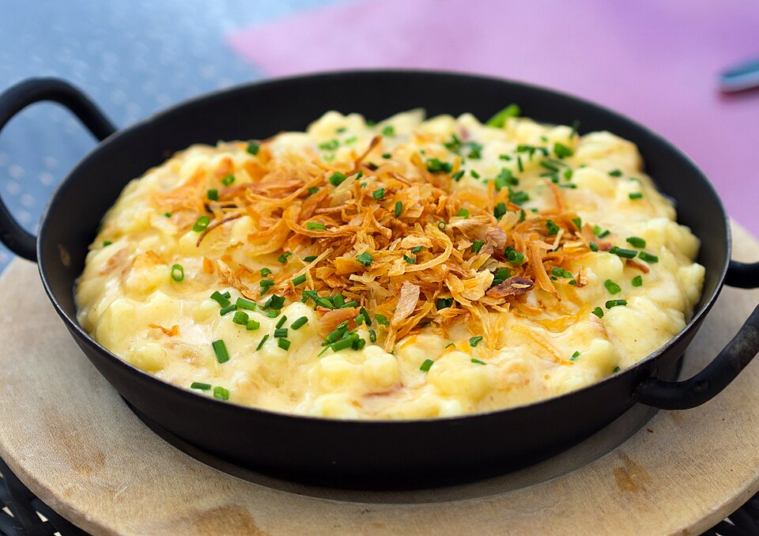
Alpine Comfort
Allgäuer Käsespätzle
Hand-scraped soft egg noodles layered with pungent Bergkäse and Emmental cheese inside a hot skillet, crowned with crispy fried onions (Röstzwiebeln).
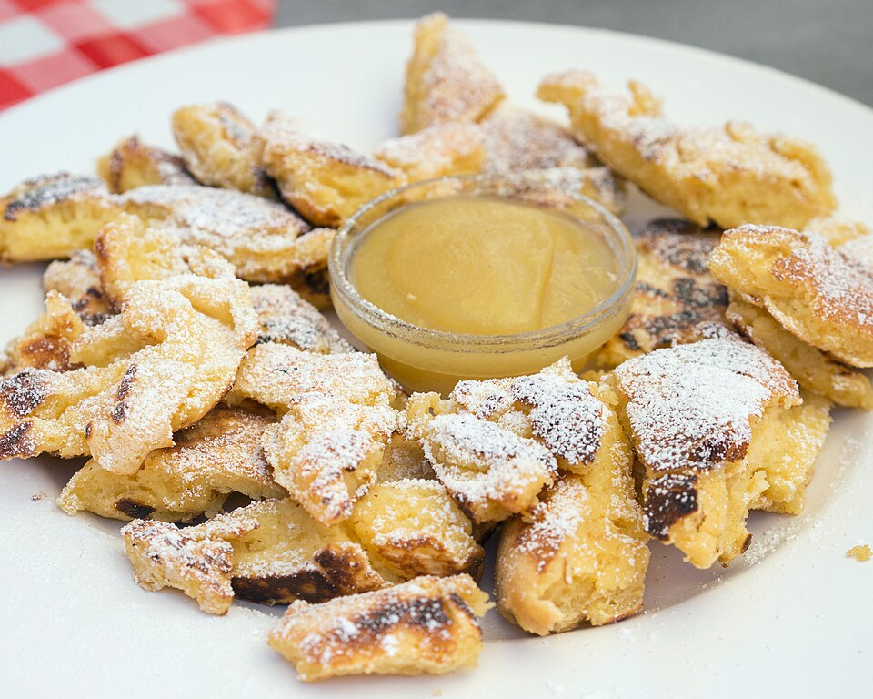
Dessert
Kaiserschmarrn
Fluffy, rum-raisin souffle pancake torn into bite-sized pieces and caramelized in butter with powdered sugar, served with roasted plum compote (Zwetschgenröster) or apple sauce.
Beer Halls & Beer Gardens (Indoor & Outdoor November Guide)
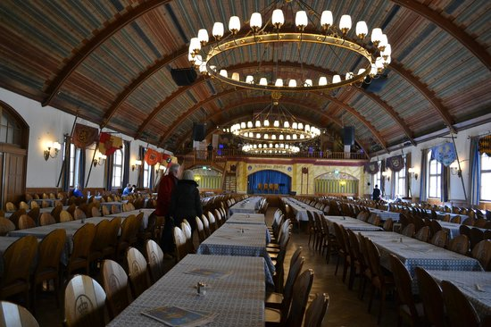
Local #1 PickHolzfass Wooden Barrel
Augustiner Bräustuben (Landsberger Str. 19) & Augustiner-Keller
Attached directly to the 1328 Augustiner brewery. Unlike tourist-heavy halls, Augustiner Bräustuben is packed with Munich locals, students, and workers. Order Augustiner Edelstoff or Helles tapped by gravity from genuine pitched wooden barrels (Holzfass)—low carbonation, silky mouthfeel, and local prices (~€3.33–€4.30 per 0.5L).
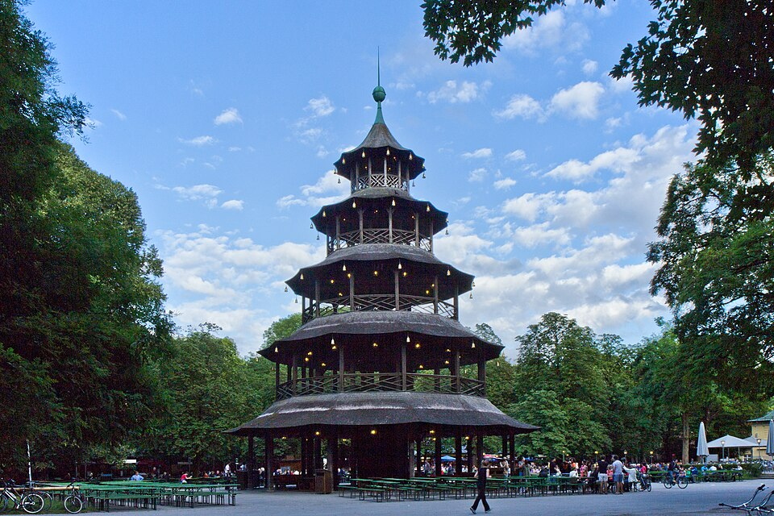
Outdoor Beer Garden
Chinesischer Turm & Viktualienmarkt Biergarten
Want the classic outdoor chestnut-tree beer garden experience in November? On dry days, both the central Viktualienmarkt Biergarten (rotating Munich Big 6 taps) and Chinesischer Turm in the Englischer Garten serve outdoor benches (plus cozy indoor Wirtshaus dining).
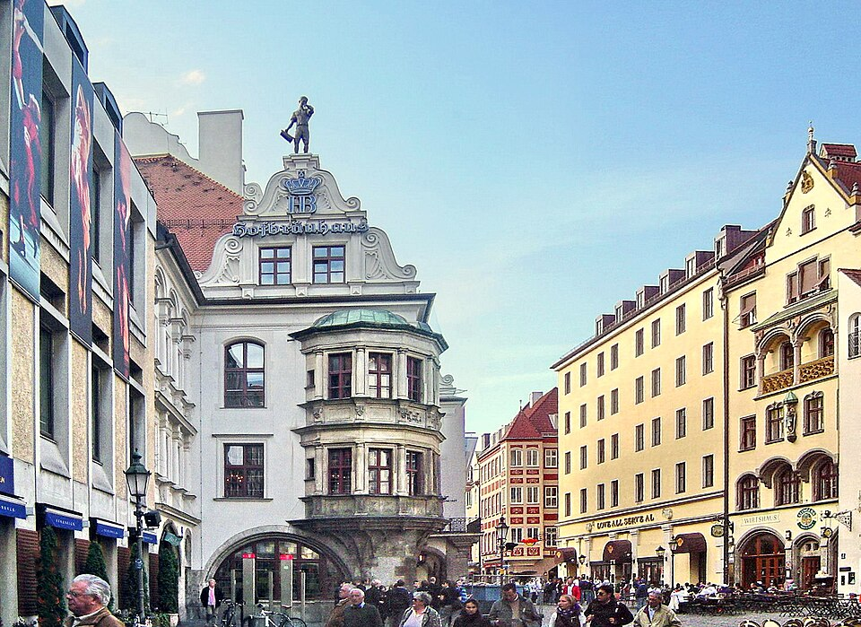
Historic Must-See
Hofbräuhaus am Platzl & Schneider Bräuhaus (Im Tal 7)
Walk through the vaulted ground-floor Schwemme of Hofbräuhaus am Platzl to admire the painted ceilings, regulars' locked ceramic steins, and live brass band—then walk 2 minutes to Schneider Bräuhaus (Im Tal 7) for complex amber wheat beers (TAP6 Unser Aventinus wheat doppelbock) and authentic Kronfleischküche specialties.
Filter by your four personal passions below, or search by name/street:
Bakery TrailBrantner Bakes Daily (except Sun/Mon)
Julius Brantner Brothandwerk, Café Frischhut & Boulangerie Dompierre
1) Julius Brantner Brothandwerk (Adalbertstr. 25, Maxvorstadt & Kreuzstr. 1, Open Tue–Fri 08:00–18:30, Sat 08:00–17:00, Closed Sun/Mon): Munich's rockstar organic sourdough baker—48-hour fermented Münchner Hauslaib & Brothandwerk 25. Baking Schedule: he bakes daily except Sunday & Monday, so the 54-layer hand-touriertes Butter Croissant, Sourdough Baguette & Saffron Cardamom Bullar are there on any open day—not Saturdays only (Saturday 14 Nov 09:15 is simply your most convenient visit; Wed 18 Nov morning works too). Tuesdays also feature Blue Poppy Seed Rolls with Brown Butter; Wednesdays feature Cinnamon Cardamom Rolls. 2) Café Frischhut (Prälat-Zistl-Str. 8): Famous since 1973 for hot Schmalznudel, Rohrnudeln, and Krapfen. ⏳ Hours not verified: the shop has no official website or reliable listing, so we do not assert opening times—go before noon on Saturday 14 Nov and trust the hours posted on the door. 3) Boulangerie Dompierre (Türkenstr. 21, Maxvorstadt): Authentic French-butter laminated croissants and baguettes.
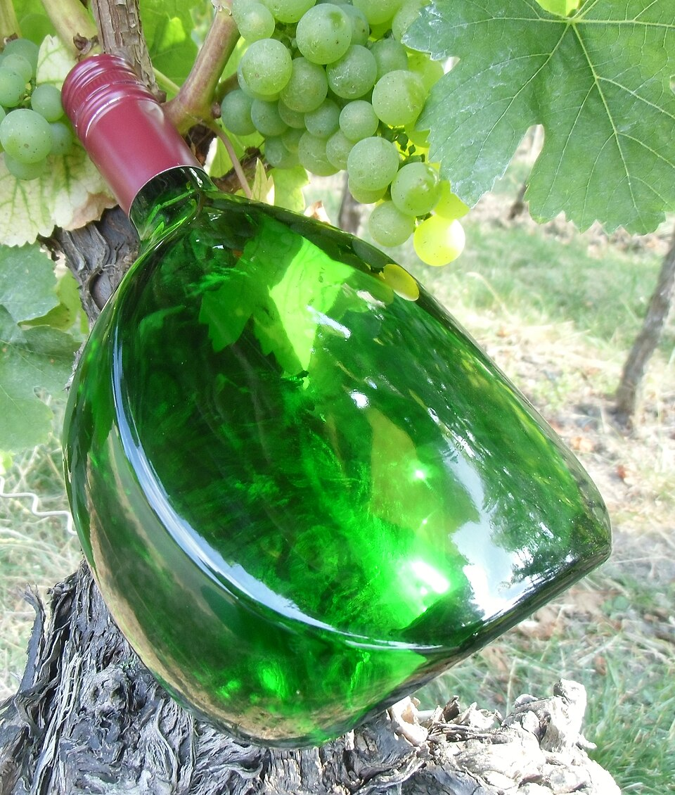
Wine TrailFranken & Pfalz
Weinhaus Neuner, Pfälzer Residenz Weinstube & Bar Mural
Bavaria produces world-class white wine in northern Franconia (Franken)! Order bone-dry, mineral Franken Silvaner poured from the iconic flat-bellied Bocksbeutel bottle. 1) Weinhaus Neuner (Herzogspitalstr. 8, Open Mon–Sun 12:00–24:00 including Sundays in winter, kitchen to 21:30!): Munich's oldest wine tavern (since 1452), candlelit wood vaults. 2) Pfälzer Residenz Weinstube (Residenzstr. 1): Inside the palace; 50+ Palatinate Rieslings & Spätburgunders by the glass. 3) Bar Mural (Hotterstr. 12): Modern natural/low-intervention wine bar adored by young Munich locals.
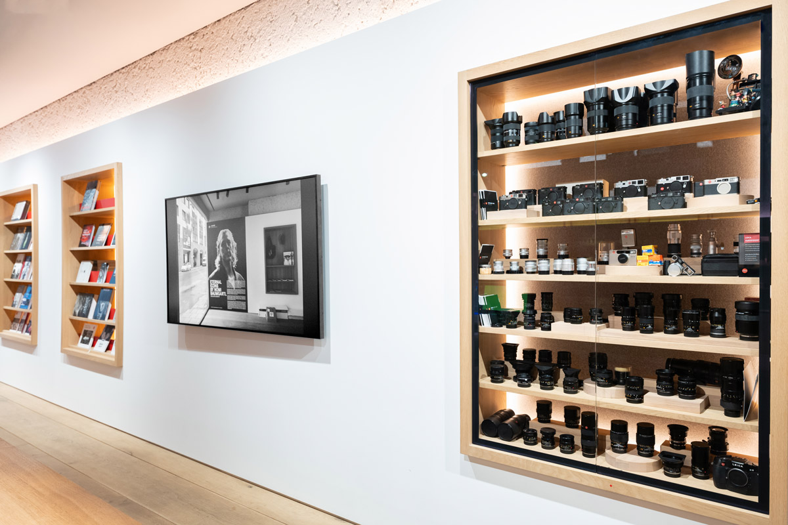
Camera TrailFoto Erhardt (ex-Dinkel): Open Mon–Sat
1) Leica Store & Leica Galerie Munich (Maffeistraße 4, Open Mon–Sat 10:00–19:00): Flagship boutique plus free fine-art photography gallery (Leica Galerie) and curated pre-owned Leica M/Q bodies & M-mount glass. 2) Calumet Photographic / Foto-Video Sauter (Sonnenstraße 21, Open Mon–Sat 10:00–19:00): Calumet merged with historic Foto-Video Sauter at Sonnenstraße 21—huge selection of analog film, darkroom supplies, and inspected used cameras. 3) Foto Erhardt — renamed from Foto Dinkel (Landwehrstr. 6, Open Mon–Fri 09:30–18:30, Sat 10:00–16:00): Professional institution since 1924 near Hauptbahnhof with second-hand trade-in counters, and it does open on Saturdays. (Scheduled on Monday 16 Nov at 15:00 right after Dachau—Sat 10:00–16:00 is your backup slot.)
1) Kunst-Oase at Ottostraße 6 (near Karolinenplatz, open Mon–Sat): Over 30 specialist antique dealers under one roof selling Meissen/Nymphenburg porcelain, silver, Biedermeier pieces, and vintage optical curiosities. 2) Saturday Flohmarkt Olympiapark or Daglfing (07:00–15:00 every Saturday): Open-air treasure hunting at Olympiapark (Parkharfe) or Daglfing trotting track for analog cameras, brass lenses, and vintage tin signs.
Strictly Curated 2-Museum Cap, First-Timer Must-Sees & Modern Local Life
Per your preference for at most one or two museums, we skip art-gallery marathon fatigue and focus exclusively on two high-impact experiences tailored to history, royal antiques, and optical/camera engineering—paired with Munich's liveliest modern residential quarters.
Right beside the Kaiserhof Christmas Village. Skip the 130-room mega-route and spend 90 focused minutes admiring the cavernous 1568 Antiquarium (the largest Renaissance hall north of the Alps, lined with classical busts) and the Schatzkammer (Treasury) housing Wittelsbach crowns, rock-crystal vessels, and Renaissance goldsmith masterpieces.
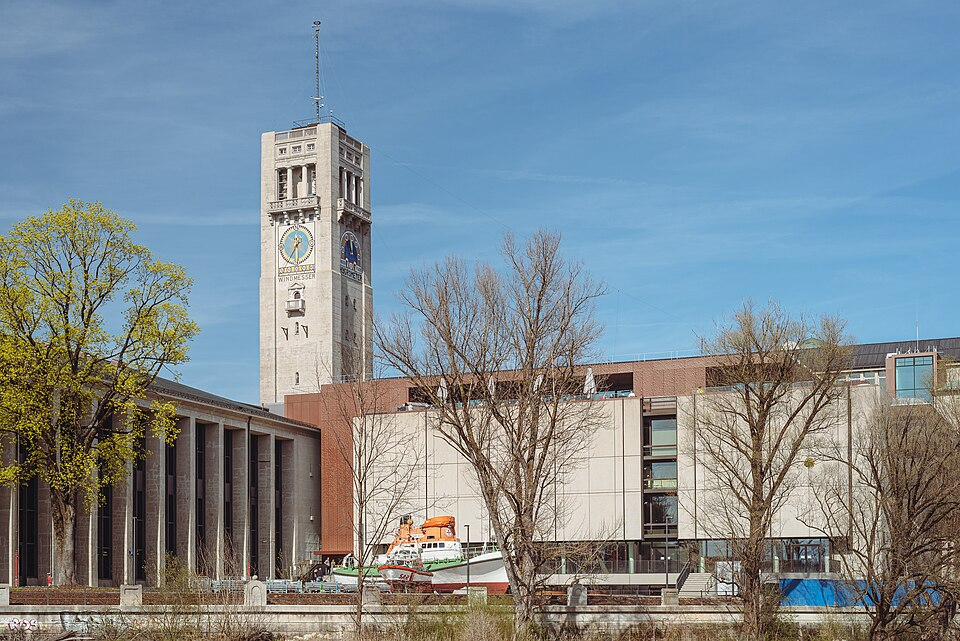
Museum #2Optics & Photography
Deutsches Museum (Classical Optics & Photography/Film Section) + Leica Galerie
On Museumsinsel, head straight to the renovated Classical Optics and Photography and Film exhibits inside the Deutsches Museum to see historic German Carl Zeiss/Leitz lenses, early daguerreotype cameras, and precision instruments—complemented by the free Leica Galerie at Maffeistraße 4.
First-Timer Must-Sees & Authentic Modern Local Neighborhoods
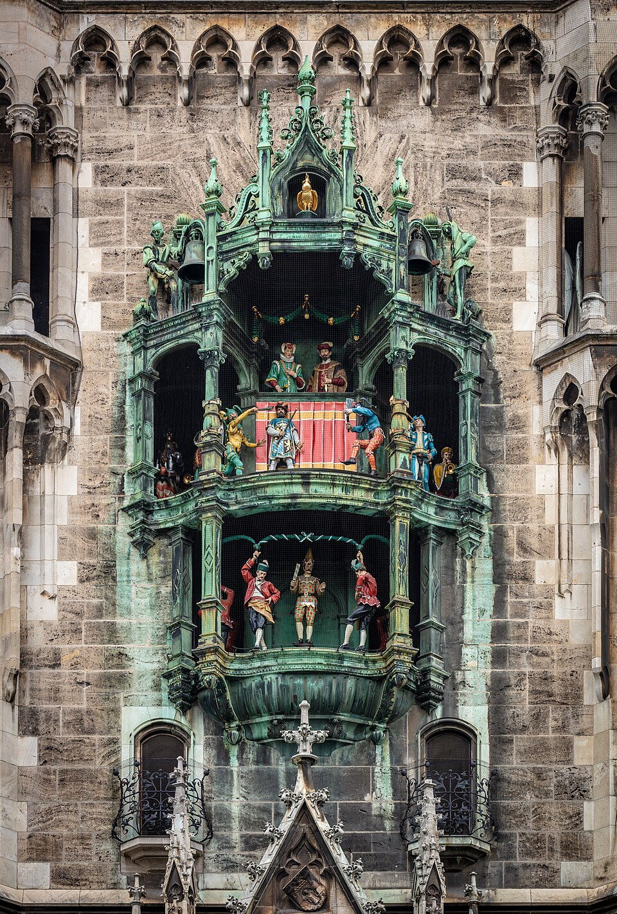
Must-See Core
Marienplatz, Neues Rathaus Glockenspiel, Frauenkirche & Alter Peter
Munich's historic heart: watch the 11:00 or 12:00 Neues Rathaus Glockenspiel, step inside the brick Gothic Frauenkirche to see the "Devil's Footprint", and climb 306 steps up Alter Peter for panoramic city views.
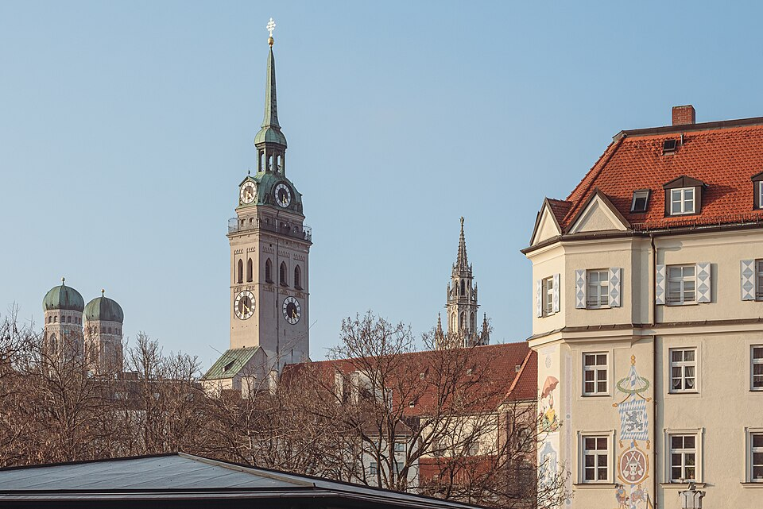
Must-See Market
Viktualienmarkt & Odeonsplatz
Sample artisan cheeses, wild game sausages, and honey at Viktualienmarkt, then stroll north up Theatinerstraße to grand Italianate Odeonsplatz and the yellow Theatinerkirche.
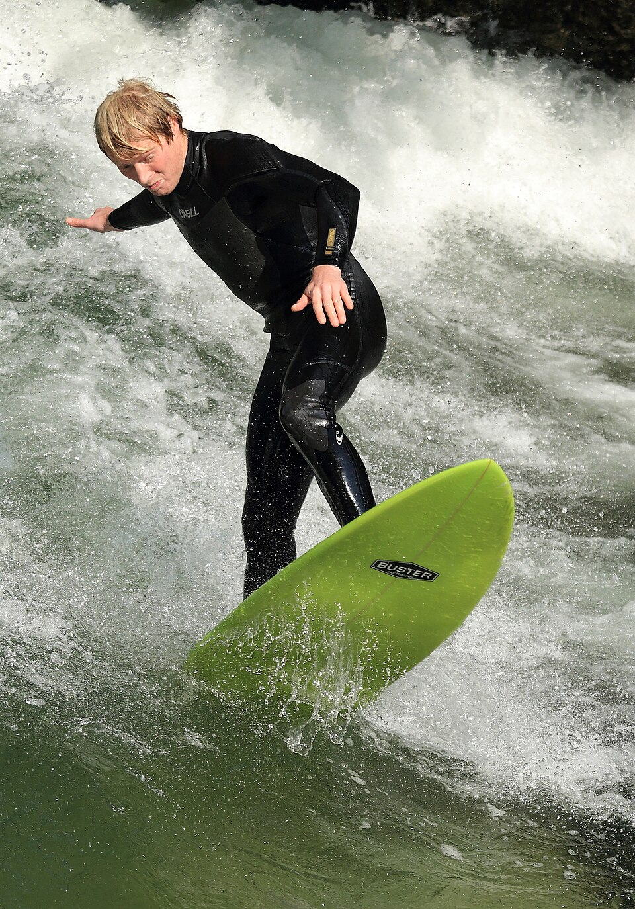
Park & Surfers
Englischer Garten & Eisbachwelle
Even in chilly November, wetsuit-clad locals queue to surf the standing river wave at Eisbachwelle at the southern entrance of the Englischer Garten.
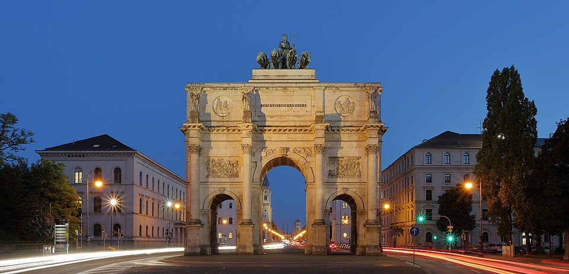
Your Home Base
Schwabing & Maxvorstadt
Your apartment at Timehouse sits in northern Schwabing. Explore Art Nouveau streets around Münchner Freiheit & Hohenzollernstraße, and walk south past the Siegestor into university-quarter Maxvorstadt for indie bookshops, specialty coffee, and bakeries.
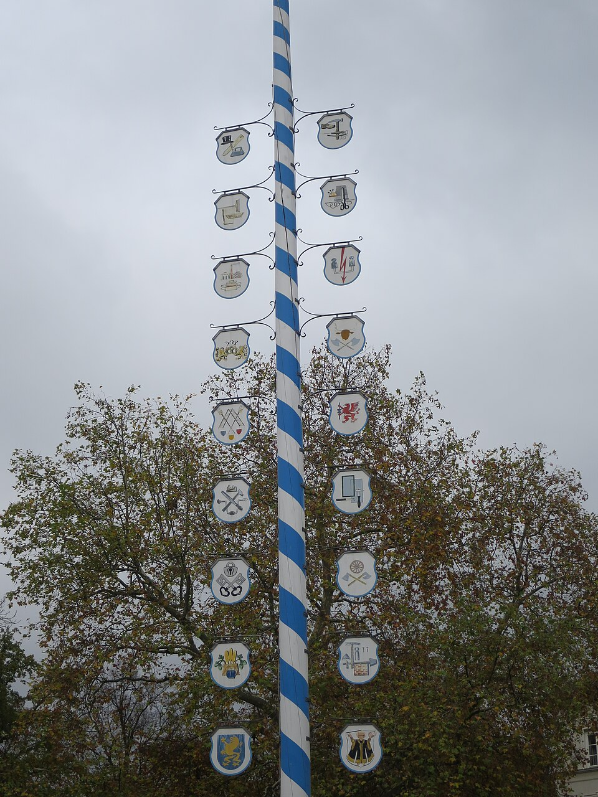
Local Quarter
Haidhausen (Wiener Platz) & Glockenbachviertel
Experience how affluent young Münchners actually live: village-like Wiener Platz in Haidhausen East of the Isar, and lively aperitivo bars, bakeries, and concept stores around Gärtnerplatz in Glockenbachviertel.
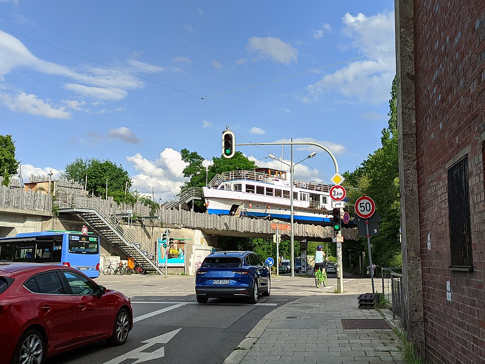
Quirky Modern Munich
Alte Utting (Sendling) & Werksviertel
A retired Ammersee passenger ship craned onto an active railway bridge in Sendling! Locals gather on deck and in the heated engine room at Alte Utting for craft beer, concerts, and street food—a world away from touristy postcard clichés.
Bavarian Transport & Troublesome Ticketing Survival Guide (2026 Tariff)
Unlike Hong Kong's Octopus card (where gates open and close automatically), German transit runs on an Honor System (Proof-of-Payment) with no turnstiles—and plainclothes inspectors (Fahrkartenkontrolleure) issue an instant €60 fine if your paper ticket isn't stamped or your name isn't written in ink.
Ticket Type (2026 Official Tariff)
Zones Covered
2026 Price
When to Use on Your Trip
MVV Single Trip (Einzelfahrkarte)
Zone M (Munich City)
€4.20 per adult
Only if taking 1 single ride. Already by 3 rides, a Group Day Ticket is cheaper!
MVV Single Day Ticket (Single-Tageskarte)
Zone M
€10.10 (1 adult)
Not needed when travelling together as a pair—buy the Group Day Ticket instead!
MVV Group Day Ticket (Gruppen-Tageskarte Zone M)
Zone M (Includes Timehouse U6 Nordfriedhof/Alte Heide & entire city)
€19.70 total (covers 2 to 5 adults until 06:00 next morning)
Use on Sat 14, Tue 17 & Wed 18 Nov! Works out to €9.85/person for unlimited U-Bahn, S-Bahn, Tram & Bus.
MVV Group Day Ticket (Gruppen-Tageskarte Zone M-1)
Zone M-1 (Munich City + Dachau Memorial)
€21.20 total (covers 2 to 5 adults)
Use on Mon 16 Nov for Dachau! Covers U6 + S2 to Dachau Bahnhof + Bus 726 to KZ-Gedenkstätte + all Munich city rides all day.
MVV Stripe Ticket (Streifenkarte)
10 Stripes (Zone M = 2 stripes per adult ride)
€18.70 (10 stripes = €3.74 per Zone M ride)
Trap Alert: For 2 adults in Zone M, you must fold the card to stamp stripe #4 (2 stripes × 2 people = 4 stripes) in the blue/red Entwerter validation box, and you must NEVER tear the card apart!
Regional Day Ticket for Bavaria (Bayern-Ticket)
All of Bavaria (Regional trains RE/RB + S-Bahn/U-Bahn/Trams + RVA Bus 73/78 to Neuschwanstein)
€44.00 total for 2 adults (2nd Class; €34 for 1st person + €10 for 2nd person)
Use on Sun 15 Nov for Neuschwanstein! Valid from 00:00 midnight on weekends (Sat/Sun) vs 09:00 on weekdays (Mon–Fri) until 03:00 next day.
Lufthansa Express Bus
München Schwabing / Nordfriedhof ↔ Munich Airport (MUC)
€12.50 online (€13.50 from driver)
Use on Thu 19 Nov morning (06:33 or 06:53)! 25 mins non-stop from Nordfriedhof to MUC Terminal 2.
€60 Fine Trap #1
The Entwerter Validation Box & Streifenkarte Rules
If you buy a paper ticket from a machine that says "Hier entwerten" (or a Streifenkarte at €18.70), you MUST stamp it inside the small blue/red Entwerter validation box at the top of the U-Bahn/S-Bahn platform stairs BEFORE boarding. Boarding with an unstamped paper ticket incurs an automatic €60 fine. Digital tickets bought in the MVGO / MVV-App or via MVVswipe (check-in swipe before boarding, check-out swipe after alighting) do not need stamping—note that MVVswipe places a temporary €10 hold and calculates the cheapest daily cap overnight, but requires check-in at surface level before entering the train.
€60 Fine Trap #2
Bayern-Ticket Rules: 09:00 Weekday vs 00:00 Weekend & Ink Name Rule
1) Time Lock: On weekdays (Mon–Fri), the Bayern-Ticket is only valid from 09:00 AM. Because you visit Neuschwanstein on Sunday 15 Nov (weekend), it is valid from 00:00 midnight so you can take the 07:52 train!
2) Mandatory Ballpoint Pen / Ink Name Writing: A paper Bayern-Ticket is invalid unless the full names of both passengers are written in ink / ballpoint pen on the ticket (digital DB Navigator tickets embed names at checkout). Carry physical passports.
3) Regional Trains Only: Valid on RB, RE, BRB, S-Bahn, U-Bahn, and Bus 73/78—never valid on white high-speed ICE, IC, or EC trains!
4) U3/U6 November 2026 Construction Alert: Phase 2 renovation works run until 27 Nov 2026 on the southern U3/U6 section (Goetheplatz/Poccistraße shuttle train). Your northern U6 ride between Nordfriedhof / Alte Heide, Odeonsplatz, and Marienplatz runs normally.
Hong Kong First-Timer to Germany: 10 Cultural & Practical Hiccups
Coming from Hong Kong's 24/7 Octopus/PayWave convenience and late-night dining, these are the biggest surprises in Bavaria:
1. Sunday Ruhetag Shutdown
Sunday (Sonntag / Ruhetag) Total Retail Shutdown
Unlike Hong Kong where malls boom on Sundays, German law enforces Sonntagsruhe (Sunday rest day / Ruhetag). Every supermarket (REWE, EDEKA, ALDI), pharmacy, department store, antique shop, and camera boutique is 100% closed on Sunday 15 Nov. Buy your Sunday breakfast/water on Saturday 14 Nov! (Restaurants, cafés, museums, and Neuschwanstein Castle remain open).
While hotels and big stores take Visa/Mastercard/Apple Pay, traditional bakeries (like Café Frischhut), Christmas market stalls, flea markets, and some beer halls still insist on cash (Bargeld). Always carry €100 in small notes and €0.50 / €1 / €2 coins—you need coins for Sanifair station/highway toilets (€1 entry gives you a €0.50–€1 voucher) and church/museum lockers.
3. Pfand Deposit System
Pfand on Christmas Mugs (Becher) & Supermarket Bottles (Flaschen)
At the Residenz Christmas Village, a €5 Glühwein costs ~€9–€10 upfront because of a €4–€5 Pfand (mug/cup deposit). You receive a small plastic token (Pfandmarke)—return both the ceramic mug and token to get your cash back! Similarly, supermarket water/beer bottles carry a €0.08–€0.25 Pfand bottle deposit; return empty bottles into the supermarket Leergutautomat machine for a cash-back receipt.
4. Water & Pretzel Basket
Stilles Wasser vs. Sprudelwasser & Paid Pretzel Baskets
If you ask for "water" in Germany, you will get aggressively carbonated sparkling water (Sprudelwasser / mit Kohlensäure) and no free tap water. Ask specifically for "Stilles Wasser" (still water)! Also, the pretzel basket (Brezenkorb) on beer hall tables is not free—servers count how many pretzels you eat (~€1.80–€2.50 each) and add them to your bill.
5. Beer Hall Etiquette
Stammtisch Reserved Signs, Shared Tables & Tipping by Rounding Up
In Bavarian beer halls, you seat yourself at long wooden communal tables—just ask "Ist hier noch frei?" (Is this seat free?). NEVER sit at a table marked with a wrought-iron or wooden "Stammtisch" sign—those are strictly reserved for lifelong local regulars! When paying, never leave cash on the table: tell the server the total including a 5%–10% tip by rounding up (Trinkgeld aufrunden)—e.g., if the bill is €36.80, hand them €40 and say "Vierzig, bitte" (Make it 40).
6. Street Rules & Weather
Jaywalking Fines, High-Speed Bike Lanes, 16:30 Sunset & Thermal Layering
1) Never Jaywalk on Red (Rotlicht): Even at 22:00 on an empty street, crossing against a red pedestrian Ampel brings angry scolding from locals (especially in front of children) and police fines.
2) Stay Off Red/Marked Bike Lanes (Radweg): Munich cyclists ride fast and silently on sidewalk-level cycle paths—never stop in a bike lane to take camera shots!
3) 16:30 Sunset & Thermal Layering: In mid-November, sunset is around 16:30 and temperatures drop to 0°C–7°C while indoor beer halls and trains are heated to 22°C. Dress in thermal layers (merino/Uniqlo Heattech base layer + fleece + wind/waterproof shell) so you can peel layers off indoors.